Alfred North Whitehead said the statement like "Philosophy begins in wonder. And, at the end, when philosophic thought has done its best, the wonder remains". So, what kind of human feature or characteristic he tried to show via philosophy science?
Answer: Curiosity and wonder as a basic human feature of philosophical thinking.
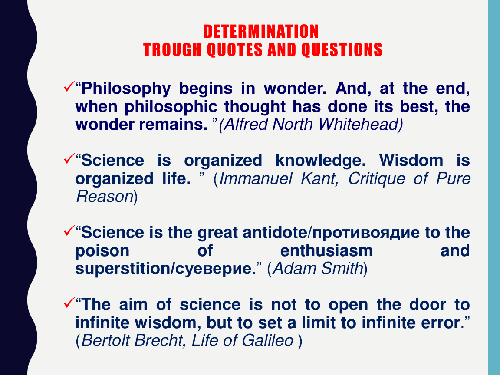
Lecture source: MDE172_Lecture1_April26 / page 5
Extracted snippet: DETERMINATION TROUGH QUOTES AND QUESTIONS ✓“Philosophy begins in wonder. And, at the end, when philosophic thought has done its best, the wonder remains. ”(Alfred North Whitehead) ✓“Science is organized knowledge. Wisdom is organized life. ” (Immanuel Kant, Critique of Pure Reason) ✓“Science is the great antidote/противоядие to the poiso...
What did Adam Smith mean saying that “Science is the great antidote to the poison of enthusiasm superstition”?
Answer: Science protects people from superstition and blind enthusiasm by giving rational, evidence-based knowledge.
Lecture source: MDE172_Lecture1_April26 / page 5
Extracted snippet: DETERMINATION TROUGH QUOTES AND QUESTIONS ✓“Philosophy begins in wonder. And, at the end, when philosophic thought has done its best, the wonder remains. ”(Alfred North Whitehead) ✓“Science is organized knowledge. Wisdom is organized life. ” (Immanuel Kant, Critique of Pure Reason) ✓“Science is the great antidote/противоядие to the poiso...
Which branch of philosophy studies existence, its principles, bases, categories, as well as matter and the material world?
Answer: Ontology.
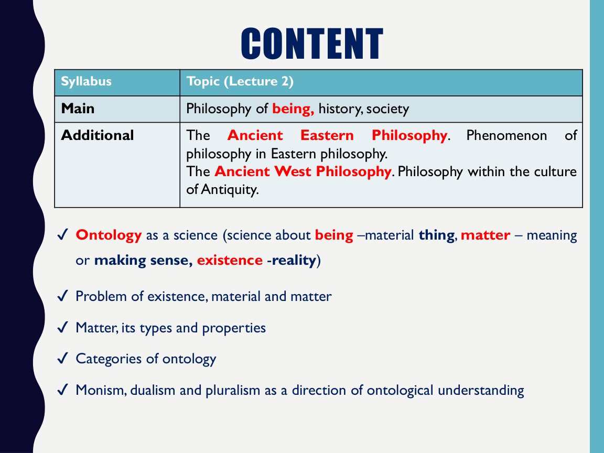
Lecture source: MDE172_Lecture2_April26 / page 2
Extracted snippet: CONTENT ✔ Ontology as a science (science about being –material thing, matter – meaning or making sense, existence -reality) ✔ Problem of existence, material and matter ✔ Matter, its types and properties ✔ Categories of ontology ✔ Monism, dualism and pluralism as a direction of ontological understanding Syllabus T opic (Lecture 2) Main Ph...
Which branch of philosophy studies cognition, the cognitive problems, its opportunity, relation between knowledge and reality, achievement of truth, to reveal facts?
Answer: Epistemology.
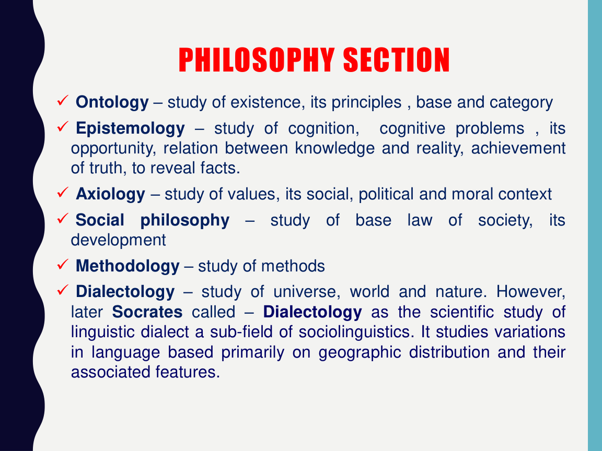
Lecture source: MDE172_Lecture1_April26 / page 9
Extracted snippet: PHILOSOPHY SECTION ✓ Ontology – study of existence, its principles , base and category ✓ Epistemology – study of cognition, cognitive problems , its opportunity, relation between knowledge and reality, achievement of truth, to reveal facts. ✓ Axiology – study of values, its social, political and moral context ✓ Social philosophy – study ...
What is the correct order for the main concepts of philosophy among offered below?
Answer: Principle -> Genesis -> Category -> Law -> Definition.
The lecture also shows a wider list of concepts, but this is the ordered core list defined in Lecture 1.
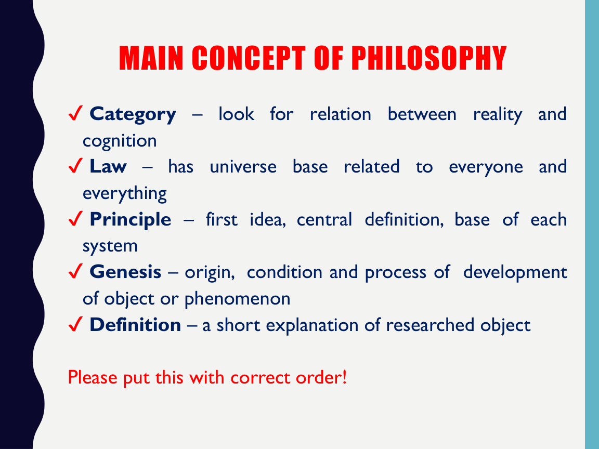
Lecture source: MDE172_Lecture1_April26 / page 12
Extracted snippet: MAIN CONCEPT OF PHILOSOPHY ✔ Category – look for relation between reality and cognition ✔ Law – has universe base related to everyone and everything ✔ Principle – first idea, central definition, base of each system ✔ Genesis – origin, condition and process of development of object or phenomenon ✔ Definition – a short explanation of resea...
Which school of Ancient Greek philosophy taught that everything in the world began from basic elements like water, air, fire, or the Apeiron-small particles (infinite or boundless)?
Answer: The Miletus school.
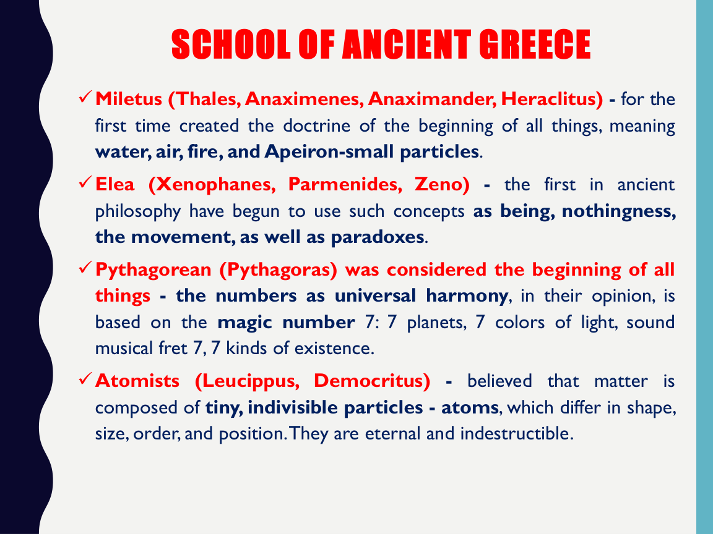
Lecture source: MDE172_Lecture2_April26 / page 27
Extracted snippet: SCHOOL OF ANCIENT GREECE ✓Miletus (Thales, Anaximenes, Anaximander,Heraclitus) - for the first time created the doctrine of the beginning of all things, meaning water,air,fire, and Apeiron-small particles. ✓Elea (Xenophanes, Parmenides, Zeno) - the first in ancient philosophy have begun to use such concepts as being, nothingness, the mov...
What word best expresses the main idea of the philo sophy of life, based on the understanding of life and death?
Answer: The meaning of life.
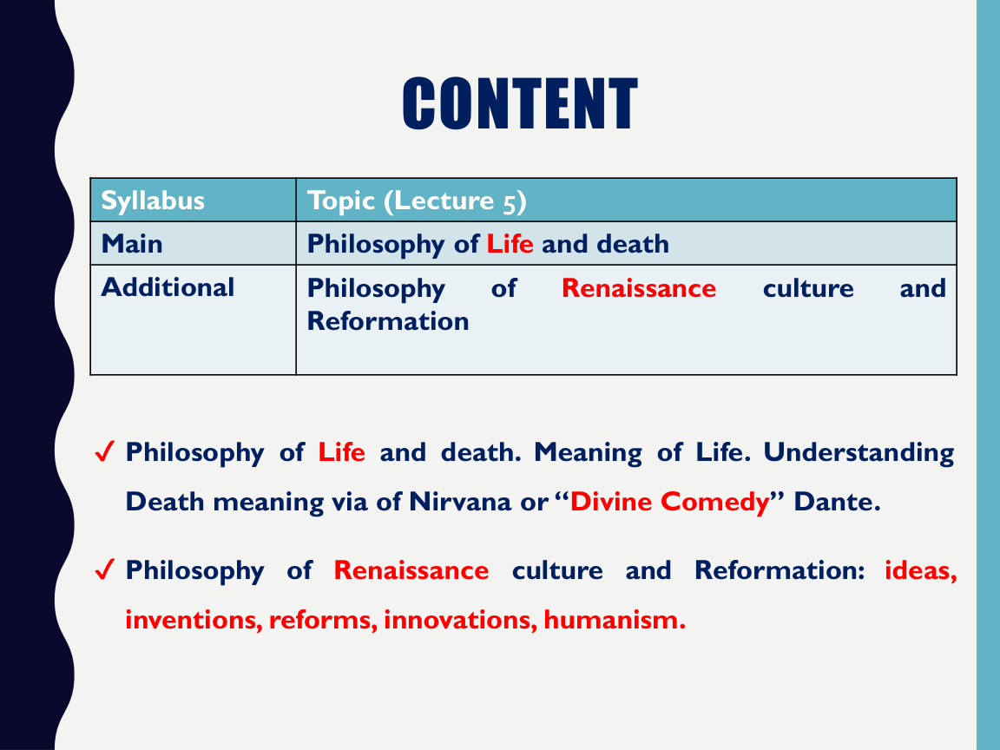
Lecture source: MDE172_Lecture5_April26 / page 2
Extracted snippet: CONTENT ✔ Philosophy of Life and death. Meaning of Life. Understanding Death meaning via of Nirvana or “Divine Comedy” Dante. ✔ Philosophy of Renaissance culture and Reformation: ideas, inventions,reforms, innovations, humanism. Syllabus T opic (Lecture 5) Main Philosophy of Life and death Additional Philosophy of Renaissance culture and...
Which Renaissance philosopher believed that 'the people are a capricious and stupid beast (animals)' and therefore should be governed by leaders, and also wrote the book City of the Sun?
Answer: Tommaso Campanella.
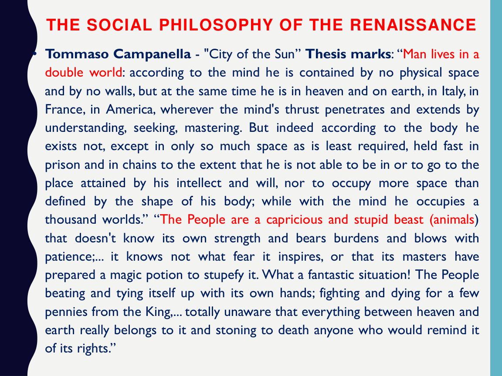
Lecture source: MDE172_Lecture5_April26 / page 26
Extracted snippet: THE SOCIAL PHILOSOPHY OF THE RENAISSANCE • T ommasoCampanella - "City of the Sun” Thesis marks: “Man lives in a double world: according to the mind he is contained by no physical space and by no walls, but at the same time he is in heaven and on earth, in Italy,in France, in America, wherever the mind's thrust penetrates and extends by u...
Which method of thinking or cognition is reflected in the Russian proverb 'Measure seven times, cut once'?
Answer: Logical and deliberate thinking. (or maybe Induction)
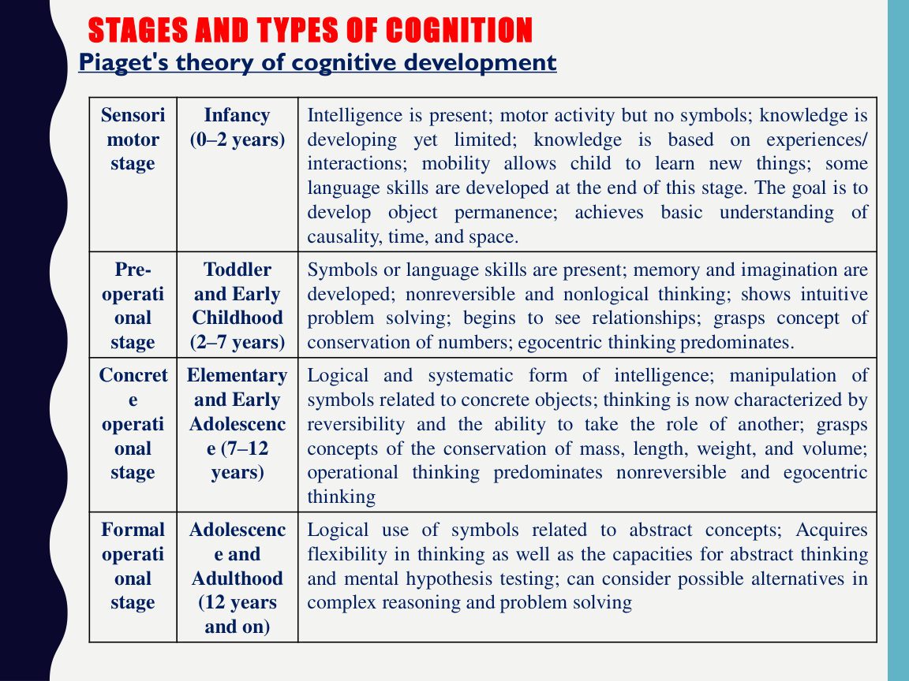
Lecture source: MDE172_Lecture1_April26 / page 30
Extracted snippet: STAGES AND T YPES OF COGNITION Piaget's theory of cognitive development Sensori motor stage Infancy (0–2 years) Intelligence is present; motor activity but no symbols; knowledge is developing yet limited; knowledge is based on experiences/ interactions; mobility allows child to learn new things; some language skills are developed at the ...
Which philosopher of the Modern time philosophy promoted the theory of dualism and the method of reasonable doubt?
Answer: Rene Descartes.
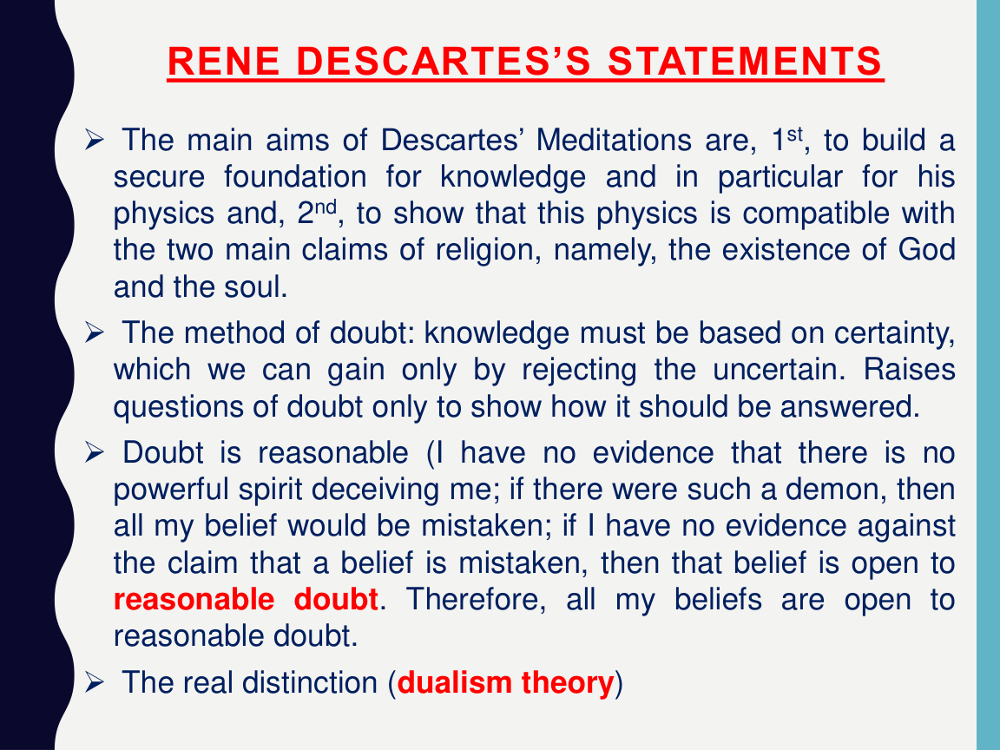
Lecture source: MDE172_Lecture6_April26 / page 19
Extracted snippet: RENE DESCARTES’S STATEMENTS ➢ The main aims of Descartes’ Meditations are, 1st, to build a secure foundation for knowledge and in particular for his physics and, 2nd, to show that this physics is compatible with the two main claims of religion, namely, the existence of God and the soul. ➢ The method of doubt: knowledge must be based on c...
Which Modern time philosopher denied the existence of material substance and claimed that only minds and their ideas are all that exist?
Answer: George Berkeley.
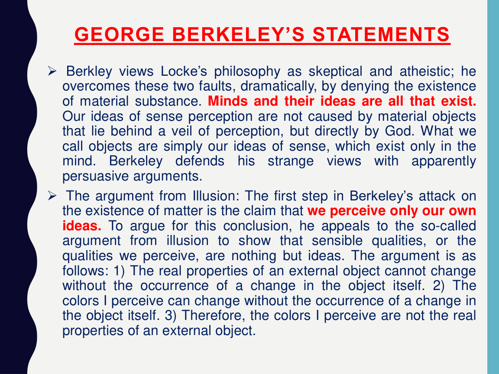
Lecture source: MDE172_Lecture6_April26 / page 21
Extracted snippet: GEORGE BERKELEY’S STATEMENTS ➢ Berkley views Locke’s philosophy as skeptical and atheistic; he overcomes these two faults, dramatically, by denying the existence of material substance. Minds and their ideas are all that exist. Our ideas of sense perception are not caused by material objects that lie behind a veil of perception, but direc...
Which philosopher of the Modern time philosophy replaced rational justification with a naturalistic explanation, aiming to shift philosophy from rationalism to naturalism?
Answer: David Hume.
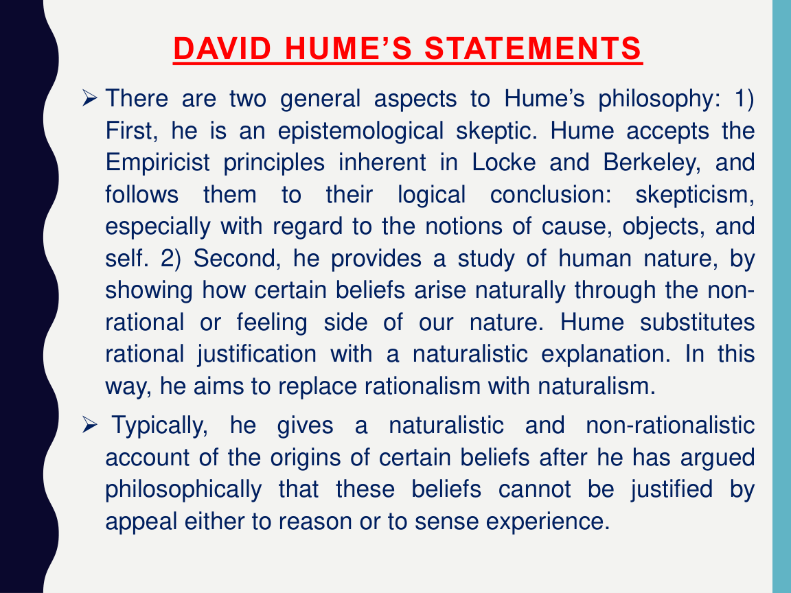
Lecture source: MDE172_Lecture6_April26 / page 23
Extracted snippet: DAVID HUME’S STATEMENTS ➢ There are two general aspects to Hume’s philosophy: 1) First, he is an epistemological skeptic. Hume accepts the Empiricist principles inherent in Locke and Berkeley, and follows them to their logical conclusion: skepticism, especially with regard to the notions of cause, objects, and self. 2) Second, he provide...
Which historical period in the philosophy of science is associated with promoting literacy and the spread of knowledge?
Answer: The Enlightenment period.
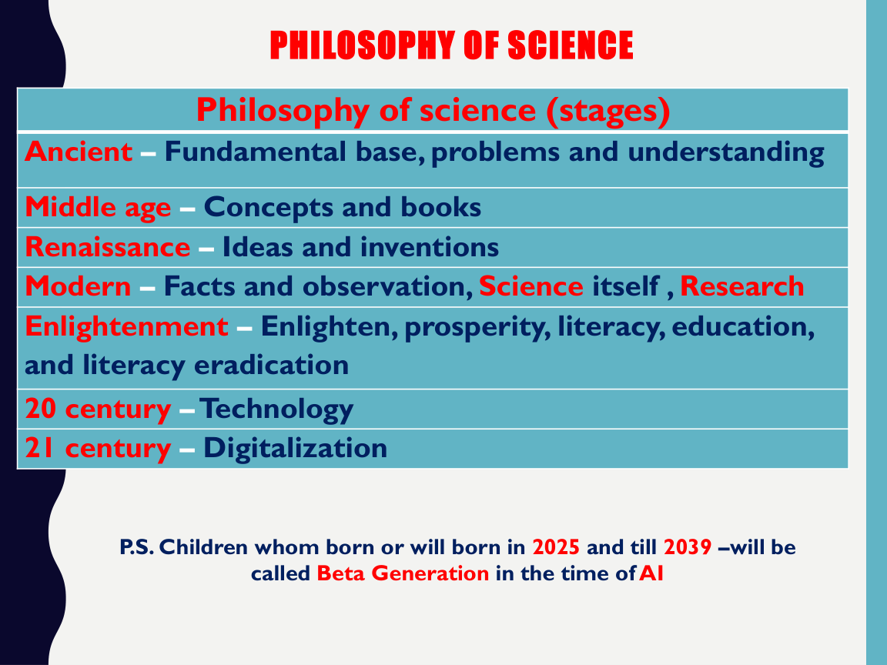
Lecture source: MDE172_Lectures2_3_4_AdditionalTopics_April26 / page 26
Extracted snippet: PHILOSOPHY OF SCIENCE Philosophy of science (stages) Ancient – Fundamental base, problems and understanding Middle age – Concepts and books Renaissance – Ideas and inventions Modern – Facts and observation, Science itself , Research Enlightenment – Enlighten, prosperity, literacy, education, and literacy eradication 20 century –T echnolo...
Baruch de Spinoza suggested that the human mind becomes more intelligent or perfect through increased activity and depends on a wider range of things that a person comes in contact, i.e., as more active and much traveled man. Which method or approach in cognitive philosophy or cognitive science aligns with this idea?
Answer: Empirical or experiential cognition through activity and contact with the world.
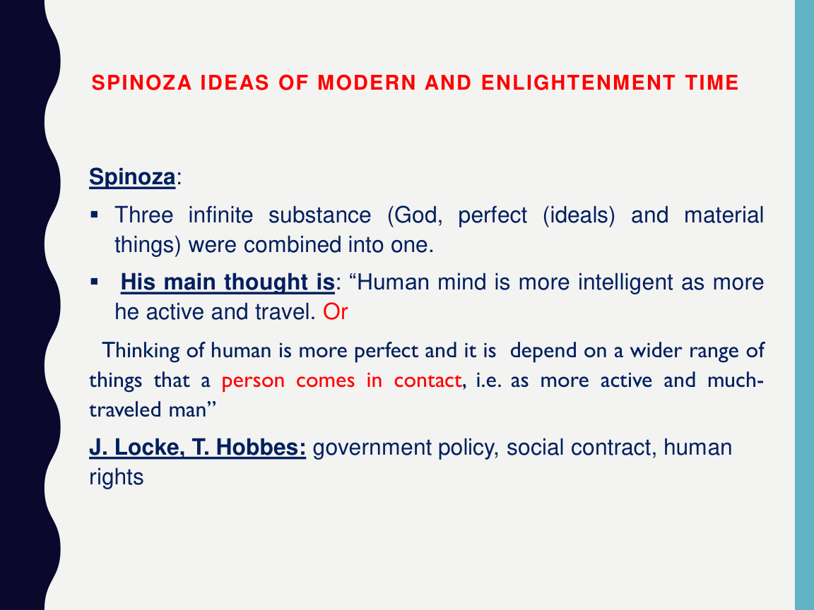
Lecture source: MDE172_Lecture6_April26 / page 29
Extracted snippet: SPINOZA IDEAS OF MODERN AND ENLIGHTENMENT TIME Spinoza: ▪ Three infinite substance (God, perfect (ideals) and material things) were combined into one. ▪ His main thought is: “Human mind is more intelligent as more he active and travel. Or Thinking of human is more perfect and it is depend on a wider range of things that a person comes in...
Which Enlightenment philosopher offered an analysis of propositions, such as the example stating that while it is a contradiction to deny the essential truth that Adam was the first man, it is not a contradiction to deny that Adam ever existed?
Answer: Gottfried Leibniz.
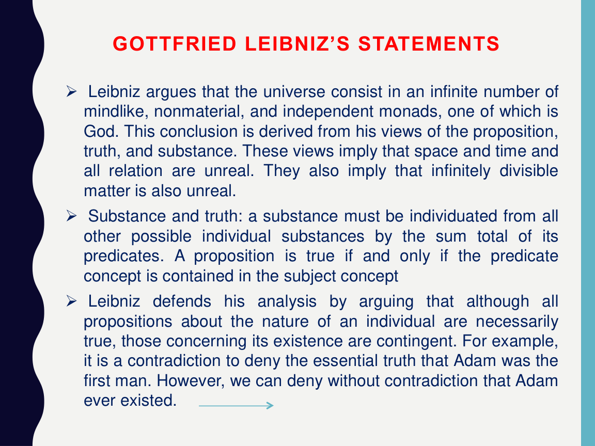
Lecture source: MDE172_Lecture6_April26 / page 30
Extracted snippet: GOTTFRIED LEIBNIZ’S STATEMENTS ➢ Leibniz argues that the universe consist in an infinite number of mindlike, nonmaterial, and independent monads, one of which is God. This conclusion is derived from his views of the proposition, truth, and substance. These views imply that space and time and all relation are unreal. They also imply that ...
What are the key elements or requiremen ts of Blaise Pascal's method of mechanical rationalism?
Answer: The 'heart argument' and the 'brain argument'.
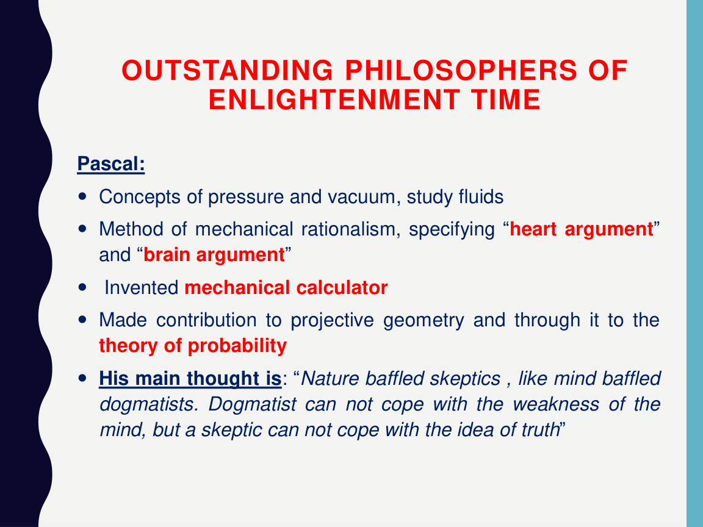
Lecture source: MDE172_Lecture6_April26 / page 33
Extracted snippet: OUTSTANDING PHILOSOPHERS OF ENLIGHTENMENT TIME Pascal: Concepts of pressure and vacuum, study fluids Method of mechanical rationalism, specifying “heart argument” and “brain argument” Invented mechanical calculator Made contribution to projective geometry and through it to the theory of probability His main thought is: “Nature ...
Who was the inventor of the first mechanical calculator?
Answer: Blaise Pascal.
Lecture source: MDE172_Lecture6_April26 / page 33
Extracted snippet: OUTSTANDING PHILOSOPHERS OF ENLIGHTENMENT TIME Pascal: Concepts of pressure and vacuum, study fluids Method of mechanical rationalism, specifying “heart argument” and “brain argument” Invented mechanical calculator Made contribution to projective geometry and through it to the theory of probability His main thought is: “Nature ...
Which Enlightenment philosopher developed a philosophical vocabulary and supported the monarchy, asserting that society should be divid ed by the educated and the rich and those who has nothing and is obliged to work for educated and rich and that if people begin to think and argue all died?
Answer: Voltaire.
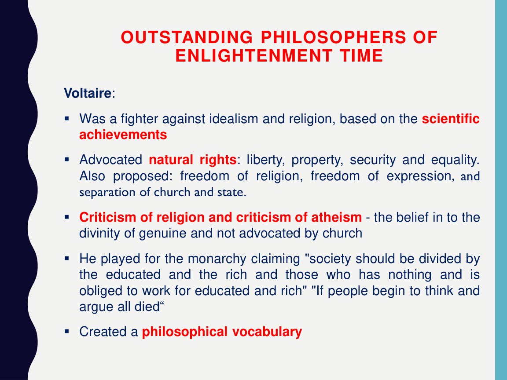
Lecture source: MDE172_Lecture6_April26 / page 34
Extracted snippet: OUTSTANDING PHILOSOPHERS OF ENLIGHTENMENT TIME Voltaire: ▪ Was a fighter against idealism and religion, based on the scientific achievements ▪ Advocated natural rights: liberty, property, security and equality. Also proposed: freedom of religion, freedom of expression, and separation of church and state. ▪ Criticism of religion and criti...
Which Enlightenment philosopher identified two types of governmental power — sovereign and admin istrative—and proposed dividing administrative power into three branches: legislative, executive, and judicial?
Answer: Charles-Louis de Montesquieu.
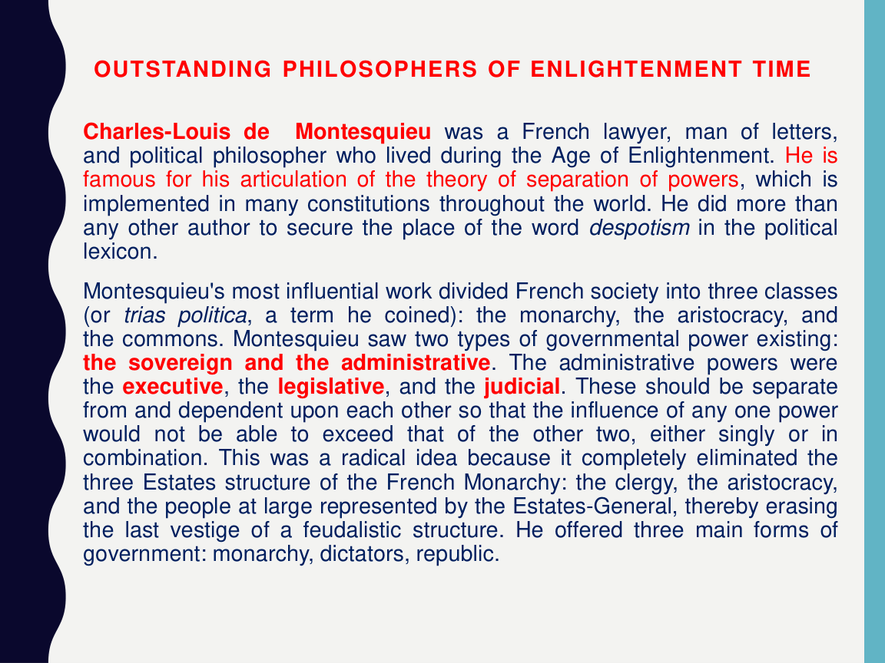
Lecture source: MDE172_Lecture6_April26 / page 37
Extracted snippet: OUTSTANDING PHILOSOPHERS OF ENLIGHTENMENT TIME Charles-Louis de Montesquieu was a French lawyer, man of letters, and political philosopher who lived during the Age of Enlightenment. He is famous for his articulation of the theory of separation of powers, which is implemented in many constitutions throughout the world. He did more than an...
What is defined as a complex society marked by the emergence of the state, social stratification, urbanization, and symbolic systems of comm unication that go beyond spoken or signed language?
Answer: Civilization.
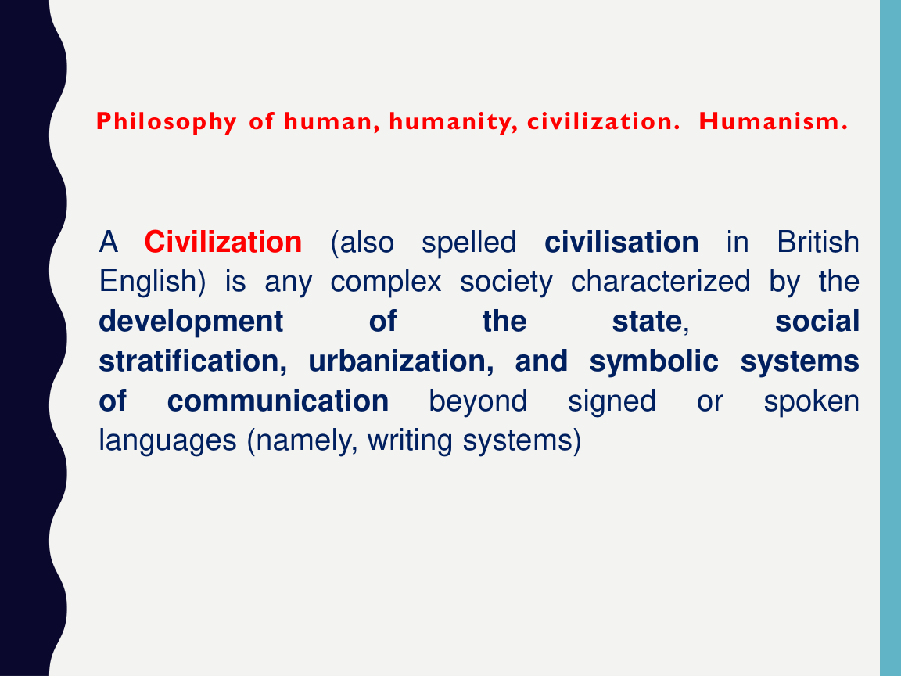
Lecture source: MDE172_Lecture7_April26 / page 5
Extracted snippet: Philosophy of human, humanity, civilization. Humanism. A Civilization (also spelled civilisation in British English) is any complex society characterized by the development of the state, social stratification, urbanization, and symbolic systems of communication beyond signed or spoken languages (namely, writing systems)
According to Kant's philosophy, what are the main components or faculties of the human mind (brain)?
Answer: Sensation (sensible intuition) and understanding (concepts).
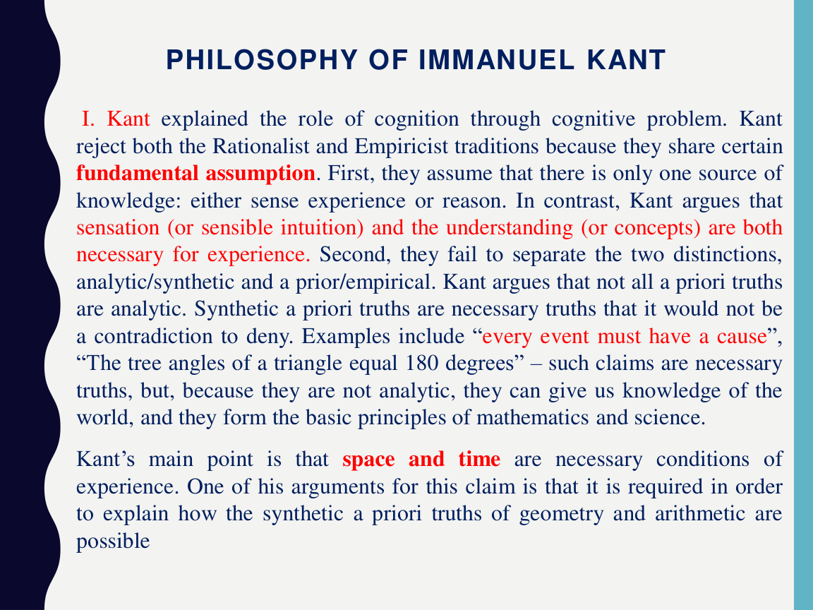
Lecture source: MDE172_Lecture7_April26 / page 17
Extracted snippet: PHILOSOPHY OF IMMANUEL KANT I. Kant explained the role of cognition through cognitive problem. Kant reject both the Rationalist and Empiricist traditions because they share certain fundamental assumption. First, they assume that there is only one source of knowledge: either sense experience or reason. In contrast, Kant argues that sensat...
Which aspect of cognitive study relates to the idea that the world exists independently of human consciousness—a concept that influenced Kant's doctrine of "things in itself" or 'things-in-themselves'?
Answer: Pure reason.
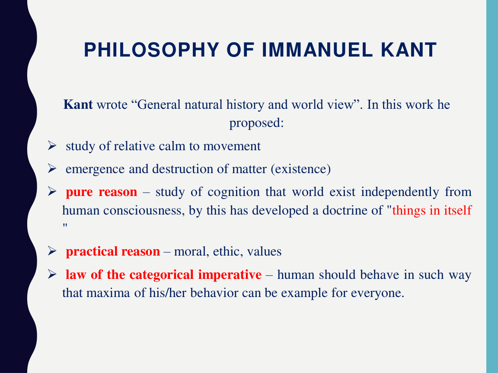
Lecture source: MDE172_Lecture7_April26 / page 22
Extracted snippet: PHILOSOPHY OF IMMANUEL KANT Kant wrote “General natural history and world view”. In this work he proposed: ➢ study of relative calm to movement ➢ emergence and destruction of matter (existence) ➢ pure reason – study of cognition that world exist independently from human consciousness, by this has developed a doctrine of "things in itself...
Who said the following statement "What is real is rational– what is rational is real”?
Answer: Georg Wilhelm Friedrich Hegel.
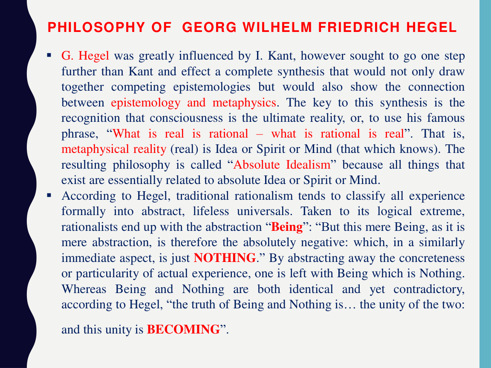
Lecture source: MDE172_Lecture7_April26 / page 23
Extracted snippet: PHILOSOPHY OF GEORG WILHELM FRIEDRICH HEGEL ▪ G. Hegel was greatly influenced by I. Kant, however sought to go one step further than Kant and effect a complete synthesis that would not only draw together competing epistemologies but would also show the connection between epistemology and metaphysics. The key to this synthesis is the reco...
In an interview, Ronaldo mentions that he trains five times a week for 3 –4 hours, not including his home fitness routine on weekends. Which principles or laws of classical German philosophy correspond to the discipline and self -regulation reflected in this statement?
Answer: Practical reason expressed through self-discipline and self-regulation.
This question is interpretive, so the answer is stated in the Kantian sense used in the lecture.
Lecture source: MDE172_Lecture6_April26 / page 4
Extracted snippet: PROJECT DEFENSE TEAM SCHEDULE (20 -P) WEEK DAY PARTICIPANT 8 WEEK 10TH of March Abzalkyzy Aruzhan 8 WEEK 10TH of March Kurbanali Uldanay 9 WEEK 17TH of March Aibergen Azamat 9 WEEK 17TH of March KydyraliYerkin
Which law or principle of German clas sical philosophy aligns with the so -called 'boomerang law,' which suggests that a person's life, behavior, and actions can serve as an example and eventually return to influence them?
Answer: The categorical imperative.
Lecture source: MDE172_Lecture7_April26 / page 22
Extracted snippet: PHILOSOPHY OF IMMANUEL KANT Kant wrote “General natural history and world view”. In this work he proposed: ➢ study of relative calm to movement ➢ emergence and destruction of matter (existence) ➢ pure reason – study of cognition that world exist independently from human consciousness, by this has developed a doctrine of "things in itself...
Who among Kazakh philosophers decided to fight against the inevitable death?
Answer: Korkyt Ata.
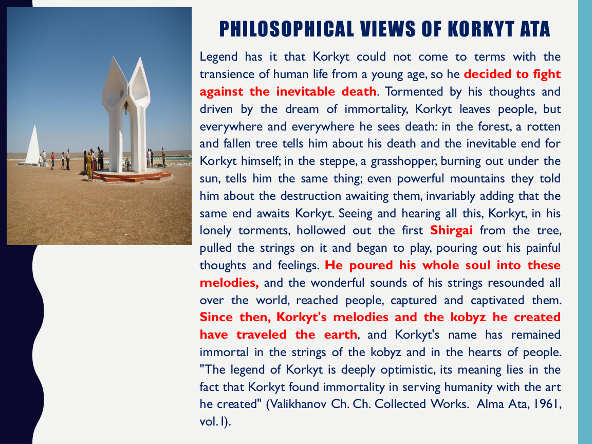
Lecture source: MDE172_Lecture8_April26 / page 4
Extracted snippet: PHILOSOPHICAL VIEWS OF KORKYT ATA • Legend has it that Korkyt could not come to terms with the transience of human life from a young age, so he decided to fight against the inevitable death. T ormented by his thoughts and driven by the dream of immortality, Korkyt leaves people, but everywhere and everywhere he sees death: in the forest,...
Which branch of philosophy focuses on the study of values?
Answer: Axiology.
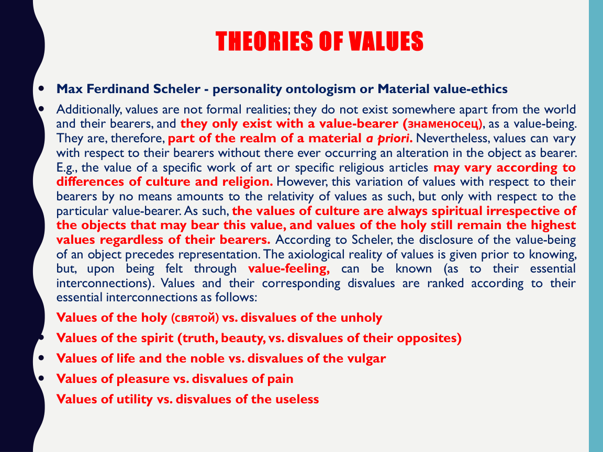
Lecture source: MDE172_Lecture1_April26 / page 45
Extracted snippet: THEORIES OF VALUES Max Ferdinand Scheler - personality ontologism or Material value-ethics Additionally, values are not formal realities; they do not exist somewhere apart from the world and their bearers, and they only exist with a value-bearer (знаменосец), as a value-being. They are, therefore, part of the realm of a material a pr...
Who among Kazakh philosopher advocated for secular education?
Answer: Ibrai Altynsarin.
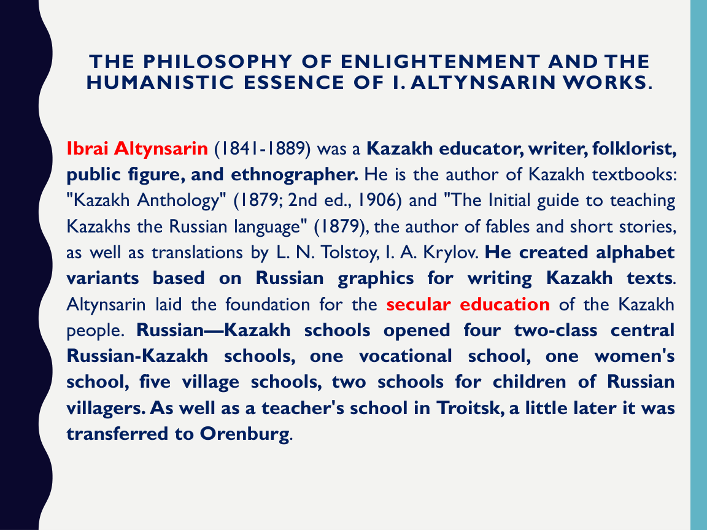
Lecture source: MDE172_Lecture8_April26 / page 12
Extracted snippet: THE PHILOSOPHY OF ENLIGHTENMENT AND THE HUMANISTIC ESSENCE OF I. ALTYNSARIN WORKS . Ibrai Altynsarin (1841-1889) was a Kazakh educator,writer,folklorist, public figure, and ethnographer. He is the author of Kazakh textbooks: "Kazakh Anthology" (1879; 2nd ed., 1906) and "The Initial guide to teaching Kazakhs the Russian language" (1879), ...
There are four stages of cognition or the cognitive process. Which of these stages are used by infants during their early days or months before they turn one year old?
Answer: The sensorimotor stage.
Lecture source: MDE172_Lecture1_April26 / page 30
Extracted snippet: STAGES AND T YPES OF COGNITION Piaget's theory of cognitive development Sensori motor stage Infancy (0–2 years) Intelligence is present; motor activity but no symbols; knowledge is developing yet limited; knowledge is based on experiences/ interactions; mobility allows child to learn new things; some language skills are developed at the ...
How can the opening of America as a country or territory be described in terms of the cognitive process? Which type of cognitive process does it represent?
Answer: Discovery or opening.
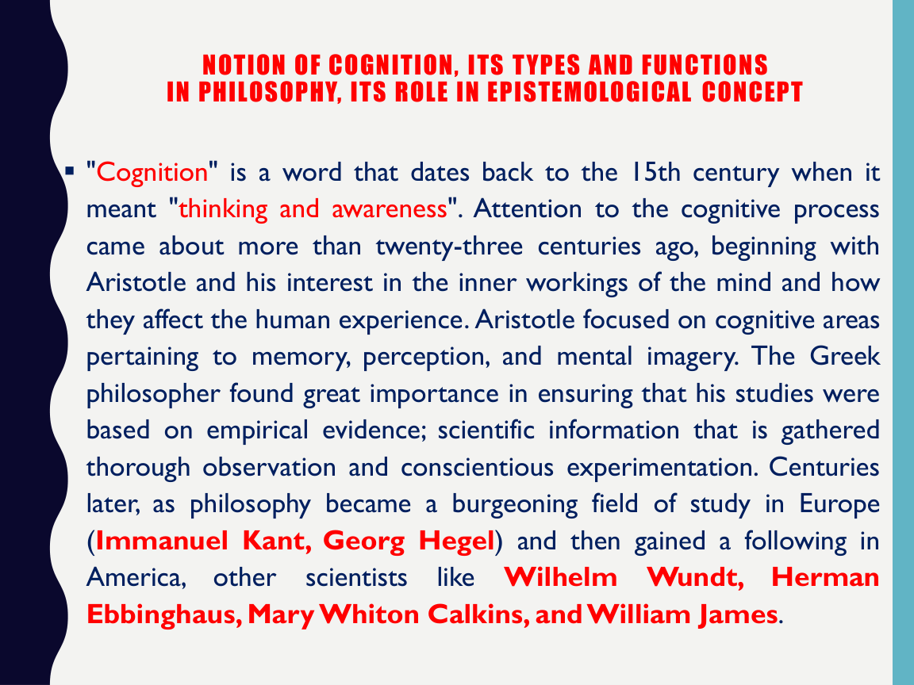
Lecture source: MDE172_Lecture1_April26 / page 26
Extracted snippet: NOTION OF COGNITION, ITS T YPES AND FUNCTION S IN PHILOSOPHY, ITS ROLE IN EPISTEMOLOGI CAL CONCEPT ▪ "Cognition" is a word that dates back to the 15th century when it meant "thinking and awareness". Attention to the cognitive process came about more than twenty-three centuries ago, beginning with Aristotle and his interest in the inner w...
What is the meaning of the word 'Philosophy' literally?
Answer: Love of wisdom.
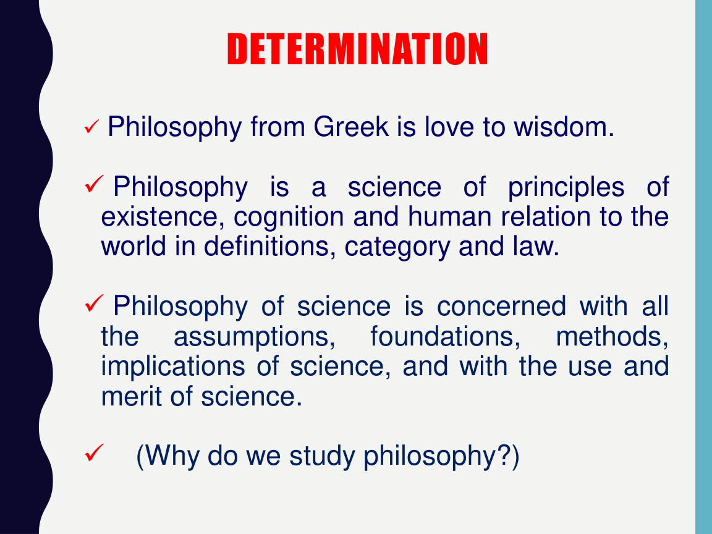
Lecture source: MDE172_Lecture1_April26 / page 7
Extracted snippet: DETERMINATION ✓ Philosophy from Greek is love to wisdom. ✓ Philosophy is a science of principles of existence, cognition and human relation to the world in definitions, category and law. ✓ Philosophy of science is concerned with all the assumptions, foundations, methods, implications of science, and with the use and merit of science. ✓ (...
What is the main focus or subject of study in philosophy?
Answer: The principles of existence, cognition, and the human relation to the world.
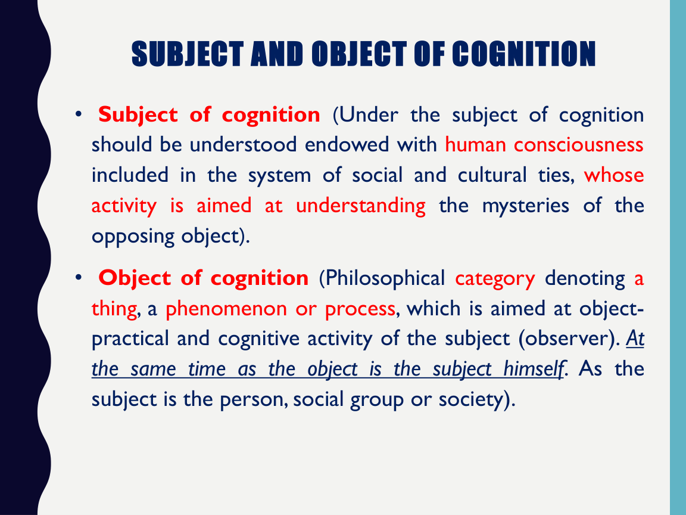
Lecture source: MDE172_Lecture1_April26 / page 18
Extracted snippet: SUBJECT AND OBJECT OF COGNITION • Subject of cognition (Under the subject of cognition should be understood endowed with human consciousness included in the system of social and cultural ties, whose activity is aimed at understanding the mysteries of the opposing object). • Object of cognition (Philosophical category denoting a thing, a ...
What category of belief do documents like laws, rules, and constitutions belong to?
Answer: Theoretical knowledge.
The exam mentions written normative documents; the lecture framework places them closer to conceptual and theoretical knowledge.
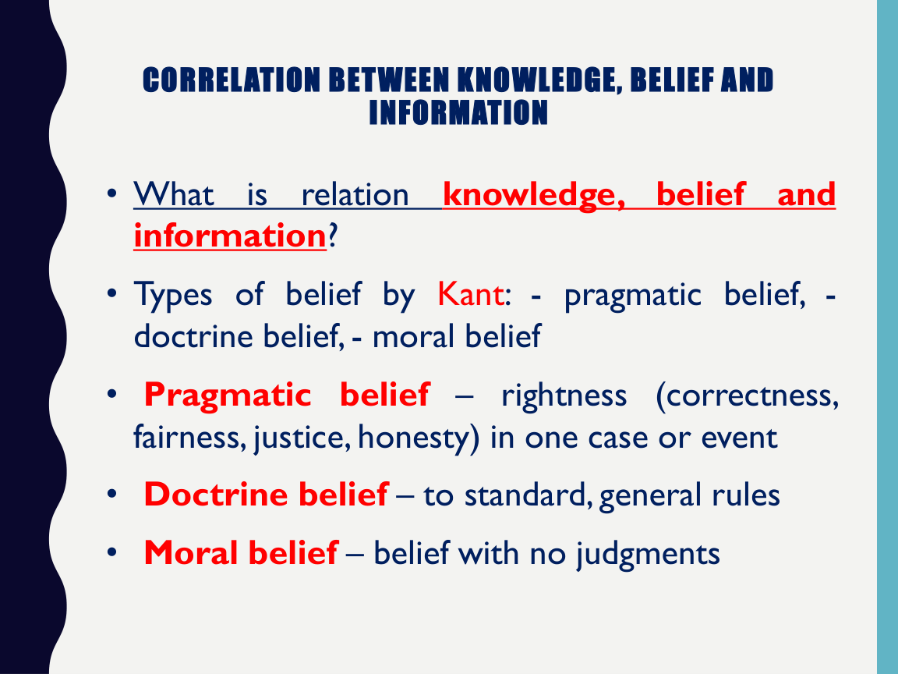
Lecture source: MDE172_Lecture1_April26 / page 17
Extracted snippet: CORREL ATION BET WEEN KNOWLEDGE, BELIEF AND INFORMATION • What is relation knowledge, belief and information? • Types of belief by Kant: - pragmatic belief, - doctrine belief, - moral belief • Pragmatic belief – rightness (correctness, fairness, justice, honesty) in one case or event • Doctrine belief – to standard, general rules • Moral...
From the perspective of epistemology and the thinking process, what relates to the Essence of a science fiction (sci-fi) book?
Answer: Concept or idea.
A sci-fi book's essence belongs more to the level of concept than to a physical object.
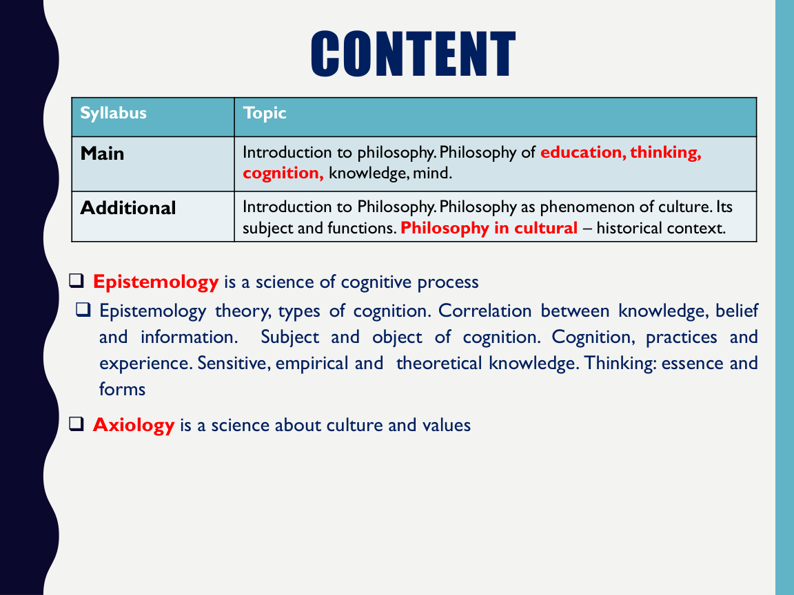
Lecture source: MDE172_Lecture1_April26 / page 13
Extracted snippet: CONTENT ❑ Epistemology is a science of cognitive process ❑ Epistemology theory, types of cognition. Correlation between knowledge, belief and information. Subject and object of cognition. Cognition, practices and experience. Sensitive, empirical and theoretical knowledge. Thinking: essence and forms ❑ Axiology is a science about culture ...
What is not related to the form of thinking?
Answer: A type of thinking such as practical thinking is not a form of thinking.
The lecture says the forms are concept, judgment, and reasoning.
Lecture source: MDE172_Lecture1_April26 / page 30
Extracted snippet: STAGES AND T YPES OF COGNITION Piaget's theory of cognitive development Sensori motor stage Infancy (0–2 years) Intelligence is present; motor activity but no symbols; knowledge is developing yet limited; knowledge is based on experiences/ interactions; mobility allows child to learn new things; some language skills are developed at the ...
What concept corresponds to the word of Eureka?
Answer: Wit or sudden creative insight.
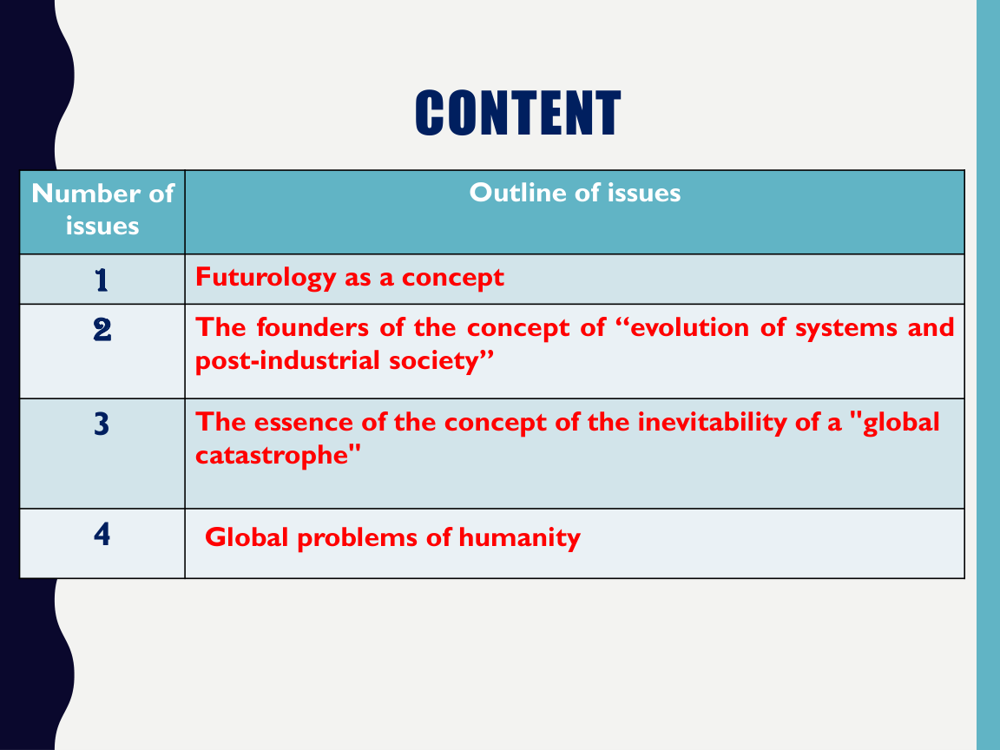
Lecture source: MDE172_Lecture15_April26 / page 2
Extracted snippet: CONTENT Number of issues Outline of issues 1 Futurology as a concept 2 The founders of the concept of “evolution of systems and post-industrial society” 3 The essence of the concept of the inevitability of a "global catastrophe" 4 Global problems of humanity
Which cognitive method begins with the formulation of a hypothesis or statement?
Answer: Deduction.
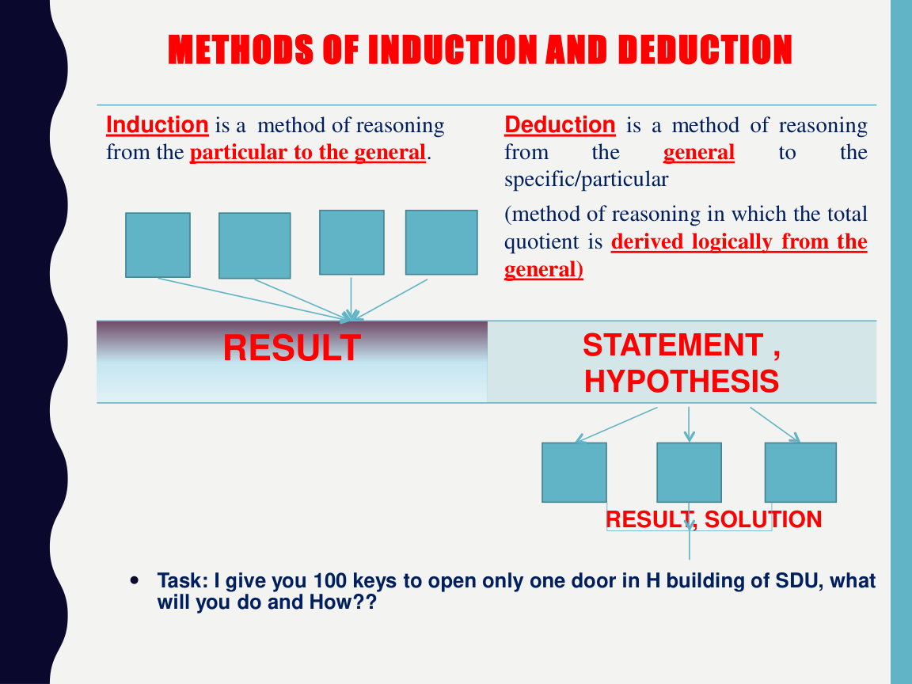
Lecture source: MDE172_Lecture1_April26 / page 24
Extracted snippet: METHODS OF INDUCTION AND DEDUCTION RESULT, SOLUTION Task: I give you 100 keys to open only one door in H building of SDU, what will you do and How?? Induction is a method of reasoning from the particular to the general. Deduction is a method of reasoning from the general to the specific/particular (method of reasoning in which the tota...
To obtain a persist ent aroma of mountain flowers in perfume, a young chemist scientist spent many hours in the laboratory selecting different compounds of mountain flowers. He couldn't predict how the flowers would unfold into compounds, so he tried different formulas over a nd over again. As a result, he managed to achieve the desired scent (aroma/smell) of mountain flowers together. What method of cognition did the young scientist use?
Answer: Trial-and-error empirical method.
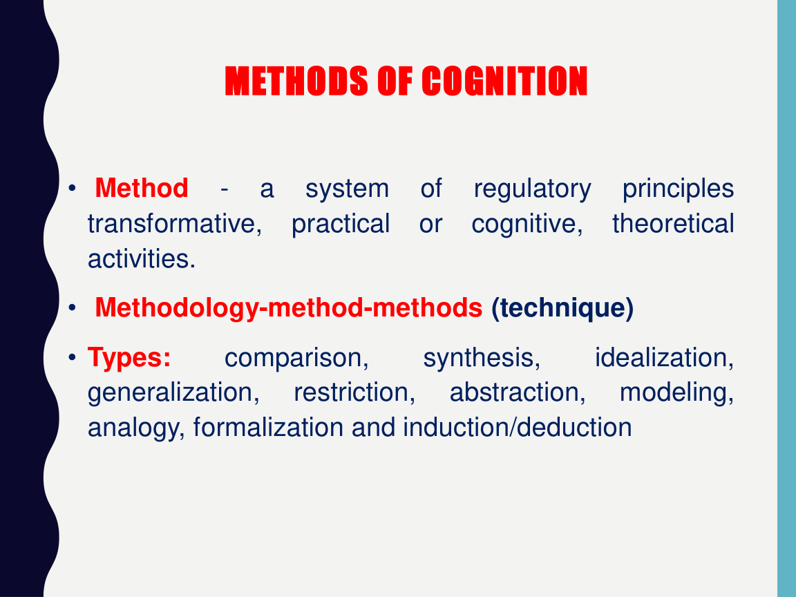
Lecture source: MDE172_Lecture1_April26 / page 23
Extracted snippet: METHODS OF COGNITION • Method - a system of regulatory principles transformative, practical or cognitive, theoretical activities. • Methodology-method-methods (technique) • Types: comparison, synthesis, idealization, generalization, restriction, abstraction, modeling, analogy, formalization and induction/deduction
Which philosopher-epistemologist held the belief that 'Every event must have a cause'?
Answer: Immanuel Kant.
Lecture source: MDE172_Lecture1_April26 / page 17
Extracted snippet: CORREL ATION BET WEEN KNOWLEDGE, BELIEF AND INFORMATION • What is relation knowledge, belief and information? • Types of belief by Kant: - pragmatic belief, - doctrine belief, - moral belief • Pragmatic belief – rightness (correctness, fairness, justice, honesty) in one case or event • Doctrine belief – to standard, general rules • Moral...
According to Georg Hegel, what is the sequence or order of stages in the cognitive learning process?
Answer: Sensation -> perception -> imagination -> thinking.
Lecture source: MDE172_Lecture7_April26 / page 23
Extracted snippet: PHILOSOPHY OF GEORG WILHELM FRIEDRICH HEGEL ▪ G. Hegel was greatly influenced by I. Kant, however sought to go one step further than Kant and effect a complete synthesis that would not only draw together competing epistemologies but would also show the connection between epistemology and metaphysics. The key to this synthesis is the reco...
What is considered as a philosophical category that identifying as a relationship between thought and reality, significant for people. The signifi cance is not determined by a property of an object or phenomenon, but by their involvement in the life of a person with a positive reaction for a person in the form of ratings/assessment?
Answer: Value.
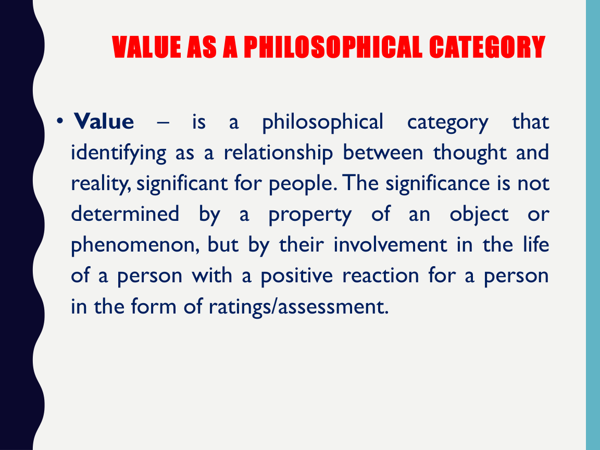
Lecture source: MDE172_Lecture1_April26 / page 38
Extracted snippet: VALUE AS A PHILOSOPHICAL CATEGORY • Value – is a philosophical category that identifying as a relationship between thought and reality,significant for people. The significance is not determined by a property of an object or phenomenon, but by their involvement in the life of a person with a positive reaction for a person in the form of r...
Which philosopher claimed that the ontological nature of existen ce is one, unchanging, fixed, and intelligible?
Answer: Parmenides.
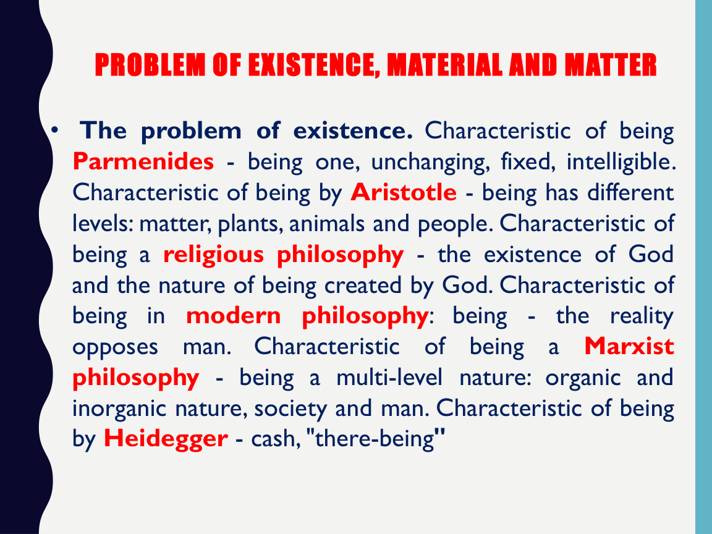
Lecture source: MDE172_Lecture2_April26 / page 4
Extracted snippet: PROBLEM OF EXISTENCE, MATERIAL AND MATTER • The problem of existence. Characteristic of being Parmenides - being one, unchanging, fixed, intelligible. Characteristic of being by Aristotle - being has different levels: matter,plants, animals and people. Characteristic of being a religious philosophy - the existence of God and the nature o...
What can be considered as an attribute for the smartphone?
Answer: An attribute can be any essential property of a smartphone, for example its color, size, or memory.
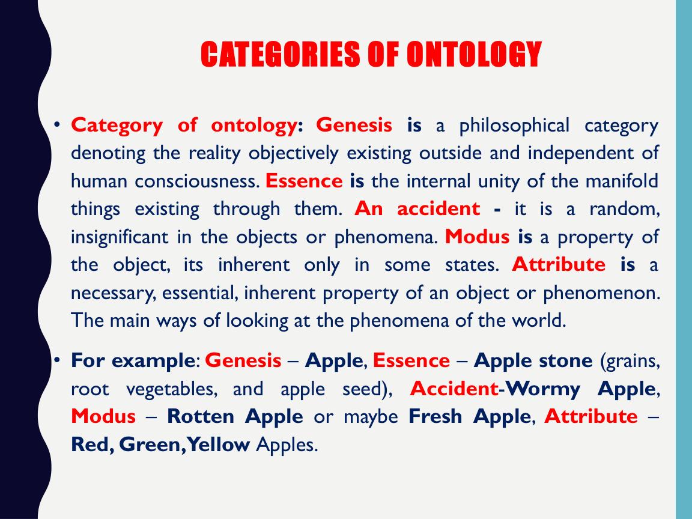
Lecture source: MDE172_Lecture2_April26 / page 6
Extracted snippet: CATEGORIES OF ONTOLOGY • Category of ontology: Genesis is a philosophical category denoting the reality objectively existing outside and independent of human consciousness. Essence is the internal unity of the manifold things existing through them. An accident - it is a random, insignificant in the objects or phenomena. Modus is a proper...
Which ancient civilization (country from Ancient Philosophy) officially embraced the concepts of liberation from suffering through overcoming karma and attaining nirvana?
Answer: Ancient India.
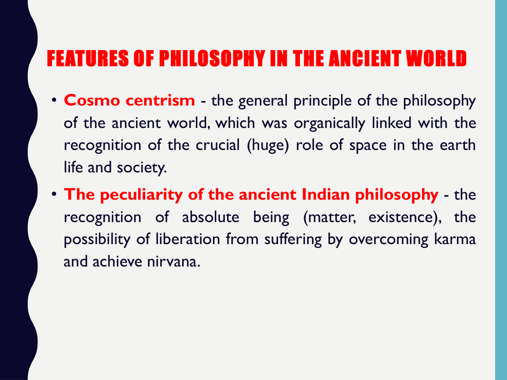
Lecture source: MDE172_Lecture2_April26 / page 11
Extracted snippet: FEATURES OF PHILOSOPHY IN THE ANCIENT WORLD • Cosmo centrism - the general principle of the philosophy of the ancient world, which was organically linked with the recognition of the crucial (huge) role of space in the earth life and society. • The peculiarity of the ancient Indian philosophy - the recognition of absolute being (matter, e...
Which branch or school of ancient philosophy focused on the right to education through the assimilation of rituals, ceremonies, courtesy, and respect?
Answer: Confucianism.
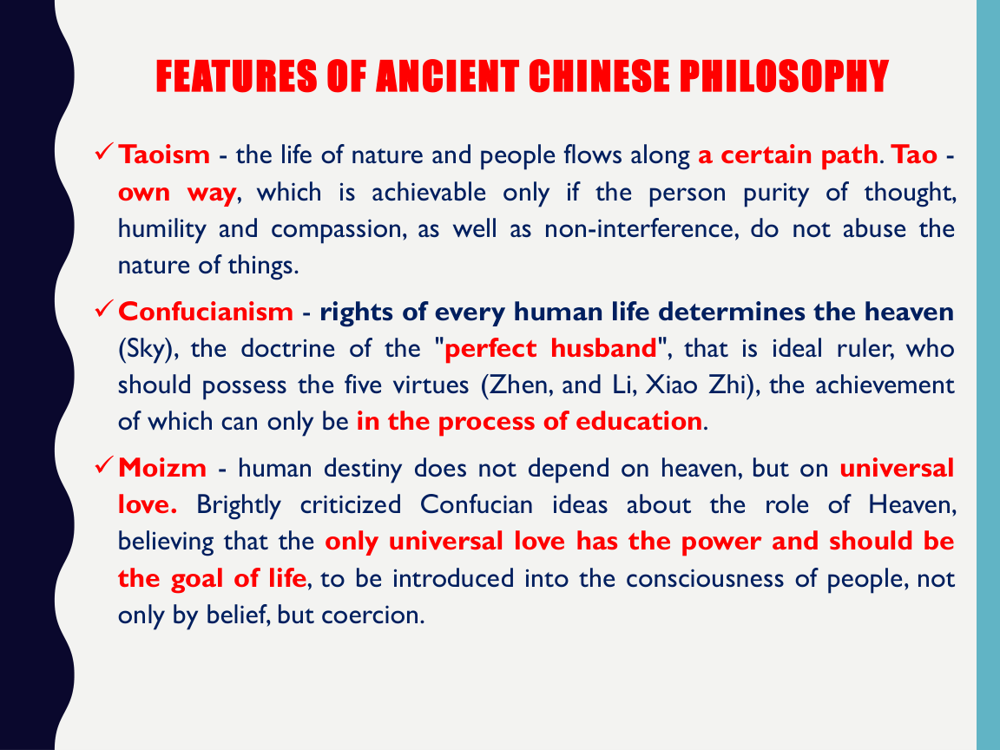
Lecture source: MDE172_Lecture2_April26 / page 24
Extracted snippet: FEATURES OF ANCIENT CHINESE PHILOSOPHY ✓T aoism- the life of nature and people flows along a certain path. T ao- own way, which is achievable only if the person purity of thought, humility and compassion, as well as non-interference, do not abuse the nature of things. ✓Confucianism - rights of every human life determines the heaven (Sky)...
Which branch or stage of ancient philosophy was shaped by the influ ence of mythology and the early development of science?
Answer: Ancient philosophy, especially its early natural-philosophical stage.
Lecture source: MDE172_Lecture1_April26 / page 30
Extracted snippet: STAGES AND T YPES OF COGNITION Piaget's theory of cognitive development Sensori motor stage Infancy (0–2 years) Intelligence is present; motor activity but no symbols; knowledge is developing yet limited; knowledge is based on experiences/ interactions; mobility allows child to learn new things; some language skills are developed at the ...
Which fundamental concept in ancient philosophy advocated for and described the ascetic way of life?
Answer: Jainism.
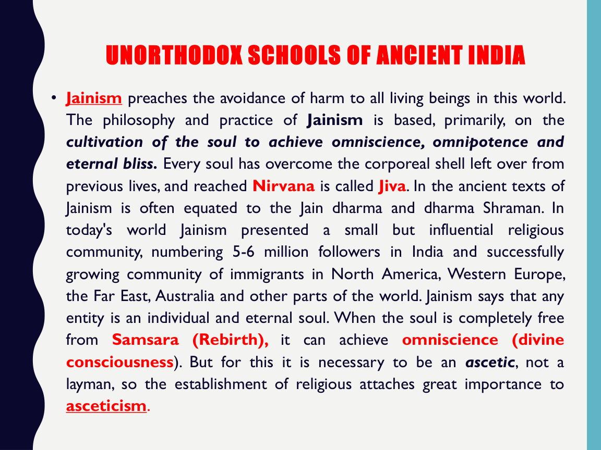
Lecture source: MDE172_Lecture2_April26 / page 17
Extracted snippet: UNORTHODOX SCHOOLS OF ANCIENT INDIA • Jainism preaches the avoidance of harm to all living beings in this world. The philosophy and practice of Jainism is based, primarily, on the cultivation of the soul to achieve omniscience, omnipotence and eternal bliss. Every soul has overcome the corporeal shell left over from previous lives, and r...
Which fundamental concept holds that the rights of every human life are determined by a heaven?
Answer: Confucianism.
Lecture source: MDE172_Lecture2_April26 / page 24
Extracted snippet: FEATURES OF ANCIENT CHINESE PHILOSOPHY ✓T aoism- the life of nature and people flows along a certain path. T ao- own way, which is achievable only if the person purity of thought, humility and compassion, as well as non-interference, do not abuse the nature of things. ✓Confucianism - rights of every human life determines the heaven (Sky)...
Which school of Ancient Greece taught that the origin of all things is numbers?
Answer: The Pythagorean school.
Lecture source: MDE172_Lecture2_April26 / page 27
Extracted snippet: SCHOOL OF ANCIENT GREECE ✓Miletus (Thales, Anaximenes, Anaximander,Heraclitus) - for the first time created the doctrine of the beginning of all things, meaning water,air,fire, and Apeiron-small particles. ✓Elea (Xenophanes, Parmenides, Zeno) - the first in ancient philosophy have begun to use such concepts as being, nothingness, the mov...
Which Ancient Greek philosopher claimed that ideas or paradigms come first, and the physical world is secondary?
Answer: Plato.
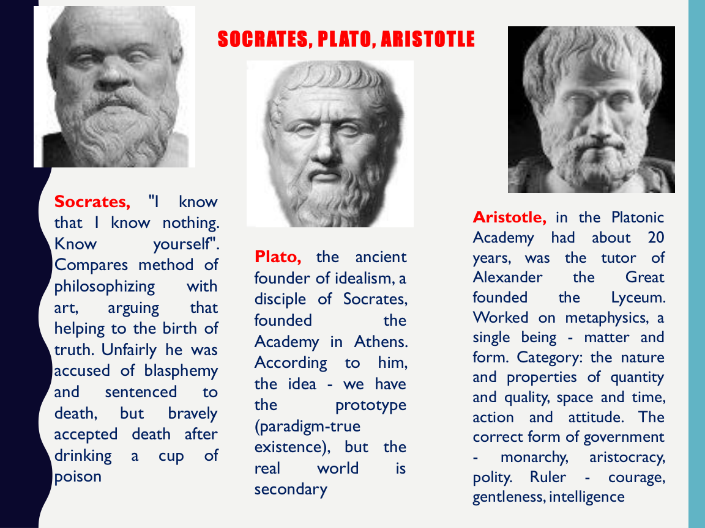
Lecture source: MDE172_Lecture2_April26 / page 29
Extracted snippet: S OC R ATES , P L ATO, AR I S TOTLE Socrates, "I know that I know nothing. Know yourself". Compares method of philosophizing with art, arguing that helping to the birth of truth. Unfairly he was accused of blasphemy and sentenced to death, but bravely accepted death after drinking a cup of poison Plato, the ancient founder of idealism, a...
Which Medieval philosopher believed that there is one truth, but at least two ways to achieve it: through philosophy and through religion?
Answer: Ibn Rushd (Averroes).
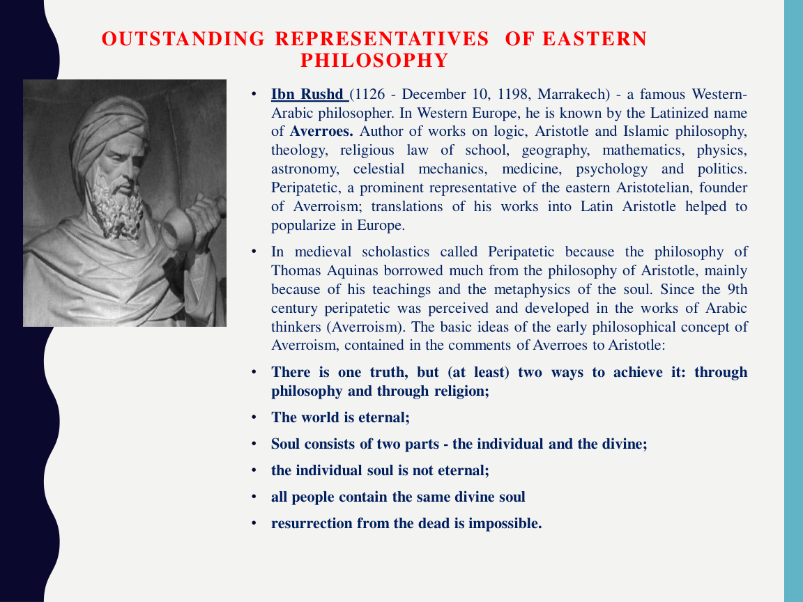
Lecture source: MDE172_Lectures2_3_4_AdditionalTopics_April26 / page 38
Extracted snippet: OUTSTANDING REPRESENTATIVES OF EASTERN PHILOSOPHY • Ibn Rushd (1126 - December 10, 1198, Marrakech) - a famous Western- Arabic philosopher. In Western Europe, he is known by the Latinized name of Averroes. Author of works on logic, Aristotle and Islamic philosophy, theology, religious law of school, geography, mathematics, physics, astro...
Which Medieval philosopher promoted the ideas of Sufism?
Answer: Khoja Ahmed Yassawi.
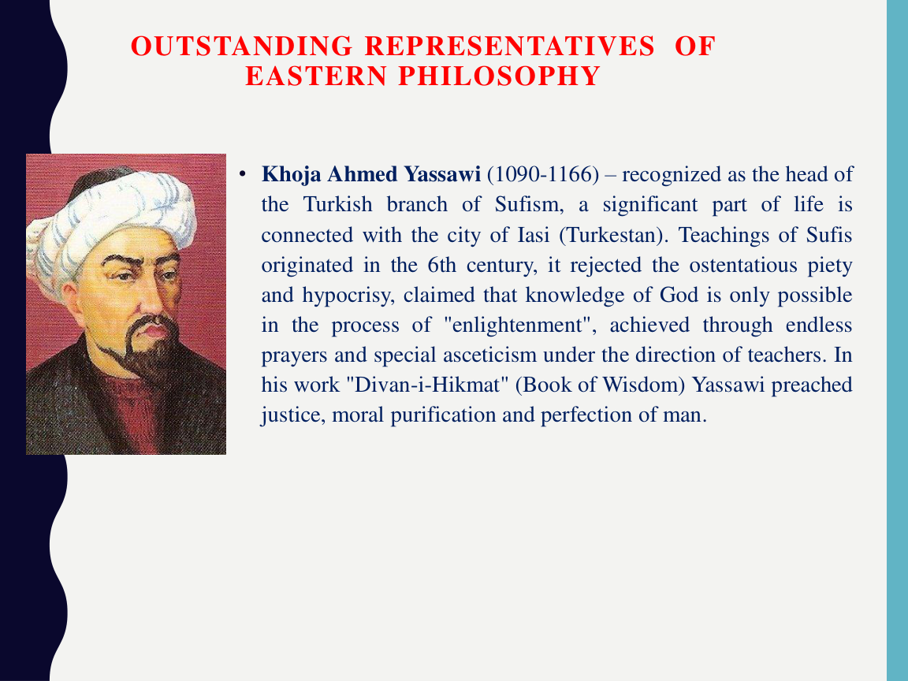
Lecture source: MDE172_Lectures2_3_4_AdditionalTopics_April26 / page 40
Extracted snippet: OUTSTANDING REPRESENTATIVES OF EASTERN PHILOSOPHY • Khoja Ahmed Yassawi (1090-1166) – recognized as the head of the Turkish branch of Sufism, a significant part of life is connected with the city of Iasi (Turkestan). Teachings of Sufis originated in the 6th century, it rejected the ostentatious piety and hypocrisy, claimed that knowledge...
Which Medieval philosopher wrote about politics, social structure, and systems of governance in wo rks such as Civil Politics and The Principles of the Opinions of the Citizens of the Virtuous City?
Answer: Al-Farabi.
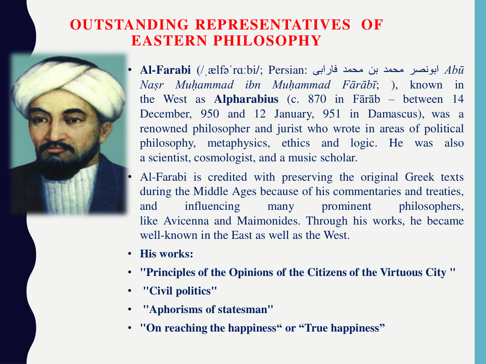
Lecture source: MDE172_Lectures2_3_4_AdditionalTopics_April26 / page 39
Extracted snippet: OUTSTANDING REPRESENTATIVES OF EASTERN PHILOSOPHY • Al-Farabi (/ˌælfəˈrɑːbi/; Persian:ابونصرمحمدبنمحمدفارابیAbū Naṣr Muḥammad ibn Muḥammad Fārābī; ), known in the West as Alpharabius (c. 870 in Fārāb – between 14 December, 950 and 12 January, 951 in Damascus), was a renowned philosopher and jurist who wrote in areas of political philosop...
Who examined the development of the Western education system in the 8th–9th centuries from the perspectives of nominalism and realism?
Answer: Scholasticism.
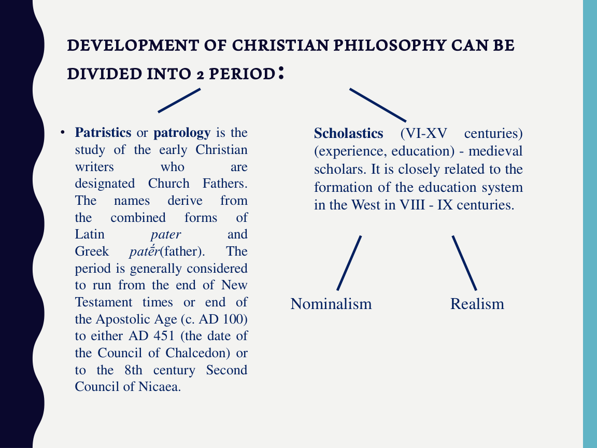
Lecture source: MDE172_Lectures2_3_4_AdditionalTopics_April26 / page 34
Extracted snippet: DEVELOPMENT OF CHRISTIAN PHILOSOPHY CAN BE DIVIDED INTO 2 PERIOD : • Patristics or patrology is the study of the early Christian writers who are designated Church Fathers. The names derive from the combined forms of Latin pater and Greek patḗr(father). The period is generally considered to run from the end of New Testament times or end o...
What are keywords of the Philosophy of Life or Meaning of Life?
Answer: Aim, goal, dream, desire, future, and needs.
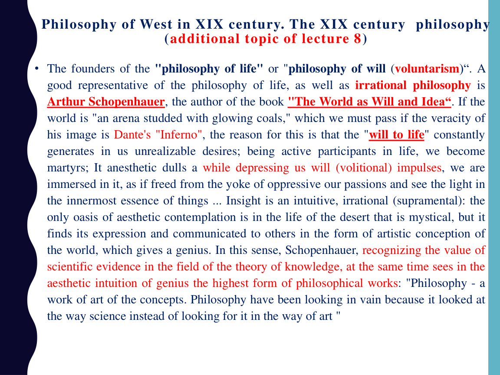
Lecture source: MDE172_Lecture9_April26 (2) / page 3
Extracted snippet: Philosophy of West in XIX century. The XIX century philosophy (additional topic of lecture 8 ) • The founders of the "philosophy of life" or "philosophy of will (voluntarism)“. A good representative of the philosophy of life, as well as irrational philosophy is Arthur Schopenhauer, the author of the book "The World as Will and Idea“. If ...
What type of professions has highest life longevity according to the Aleksey Sitnikov (psychologist) opinion?
Answer: Breeders of agricultural crops.
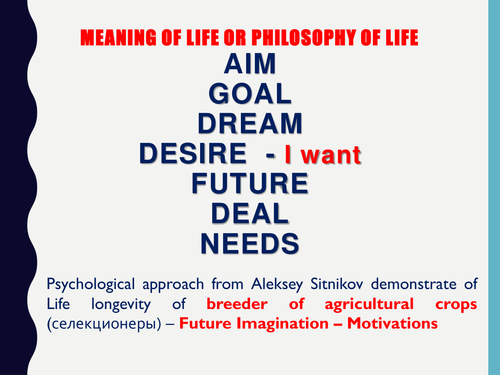
Lecture source: MDE172_Lecture5_April26 / page 3
Extracted snippet: MEANING OF LIFE OR PHILOSOPHY OF LIFE A IM GOAL DREAM DESIRE - I want FUTURE DEAL NEEDS Psychological approach from Aleksey Sitnikov demonstrate of Life longevity of breeder of agricultural crops (селекционеры) – Future Imagination – Motivations
What is the basic principle of the Renaissance philosophy?
Answer: Humanism or anthropocentrism.
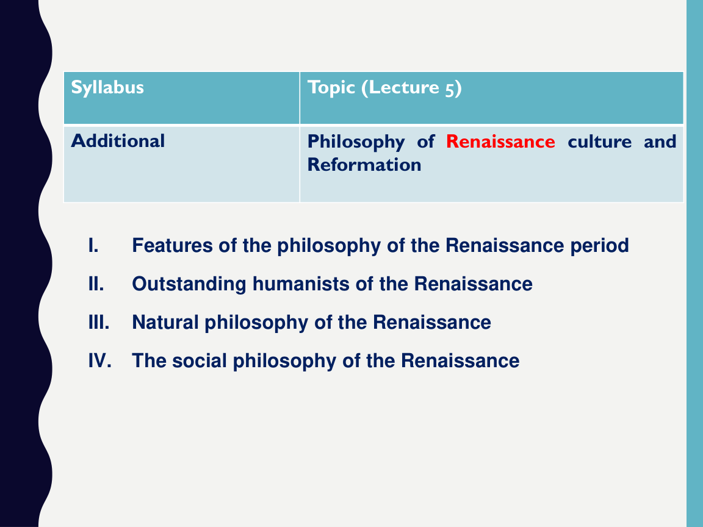
Lecture source: MDE172_Lecture5_April26 / page 8
Extracted snippet: I. Features of the philosophy of the Renaissance period II. Outstanding humanists of the Renaissance III. Natural philosophy of the Renaissance IV. The social philosophy of the Renaissance Syllabus T opic(Lecture 5) Additional Philosophy of Renaissance culture and Reformation
What does not belong to the central principles of Renaissance philosophy?
Answer: Theocentrism does not belong to the central principles of Renaissance philosophy.
This is an inferred answer because the original options are not visible in the PDF.
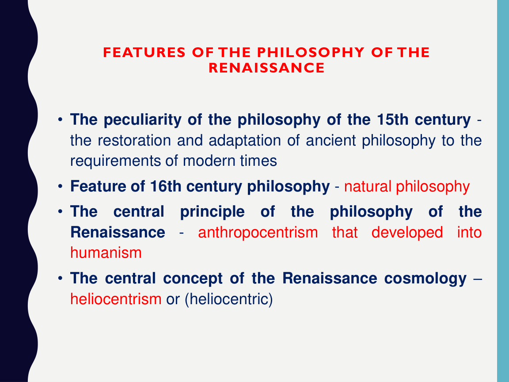
Lecture source: MDE172_Lecture5_April26 / page 10
Extracted snippet: FEATURES OF THE PHILOSOPHY OF THE RENAISSANCE • The peculiarity of the philosophy of the 15th century - the restoration and adaptation of ancient philosophy to the requirements of modern times • Feature of 16th century philosophy - natural philosophy • The central principle of the philosophy of the Renaissance - anthropocentrism that dev...
Who did propose the idea of heliocentrism which says that the Sun is the center of the universe?
Answer: Nicolaus Copernicus.
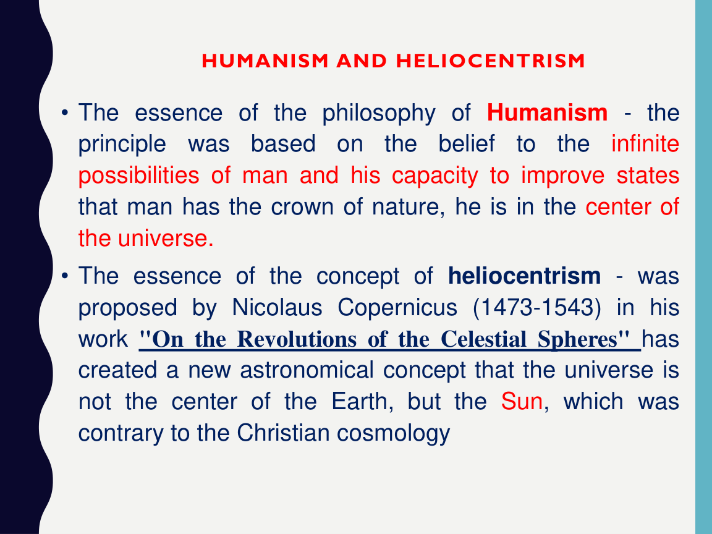
Lecture source: MDE172_Lecture5_April26 / page 11
Extracted snippet: HUMANISM AND HELIOCENTRISM • The essence of the philosophy of Humanism - the principle was based on the belief to the infinite possibilities of man and his capacity to improve states that man has the crown of nature, he is in the center of the universe. • The essence of the concept of heliocentrism - was proposed by Nicolaus Copernicus (...
Who did propose the idea of the sovereignty of state in the Renaissance time firstly?
Answer: Jean Bodin.
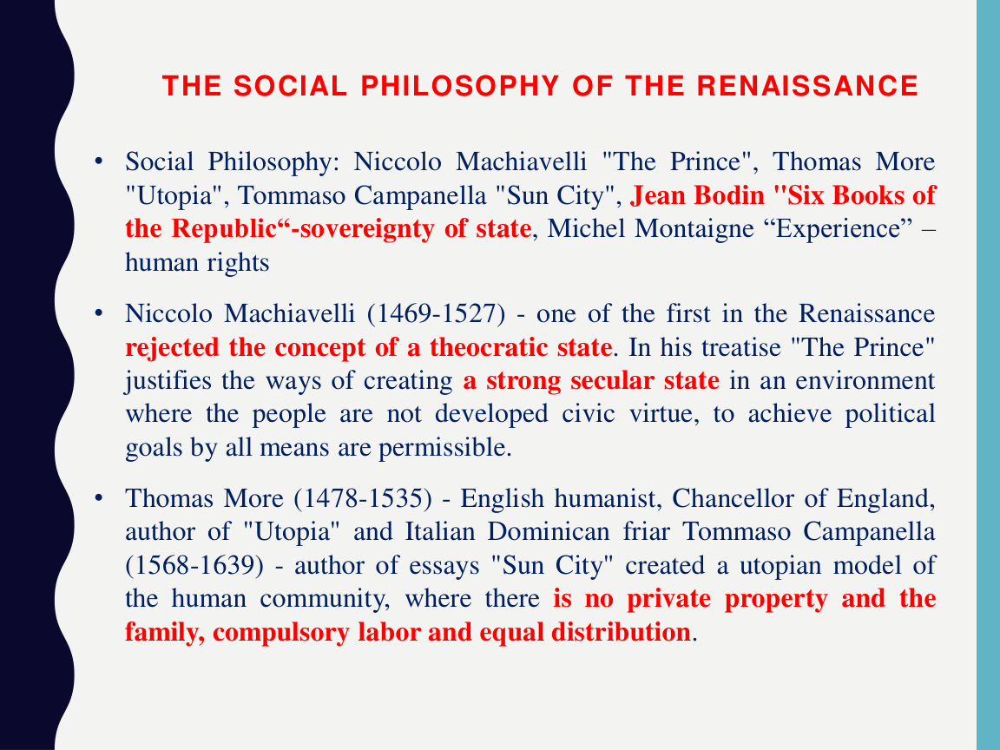
Lecture source: MDE172_Lecture5_April26 / page 28
Extracted snippet: THE SOCIAL PHILOSOPHY OF THE RENAISSANCE • Social Philosophy: Niccolo Machiavelli "The Prince", Thomas More "Utopia", Tommaso Campanella "Sun City", Jean Bodin "Six Books of the Republic“-sovereignty of state, Michel Montaigne “Experience” – human rights • Niccolo Machiavelli (1469-1527) - one of the first in the Renaissance rejected the...
Who did propose firstly the idea of a strong secular state in the Renaissance time?
Answer: Niccolo Machiavelli.
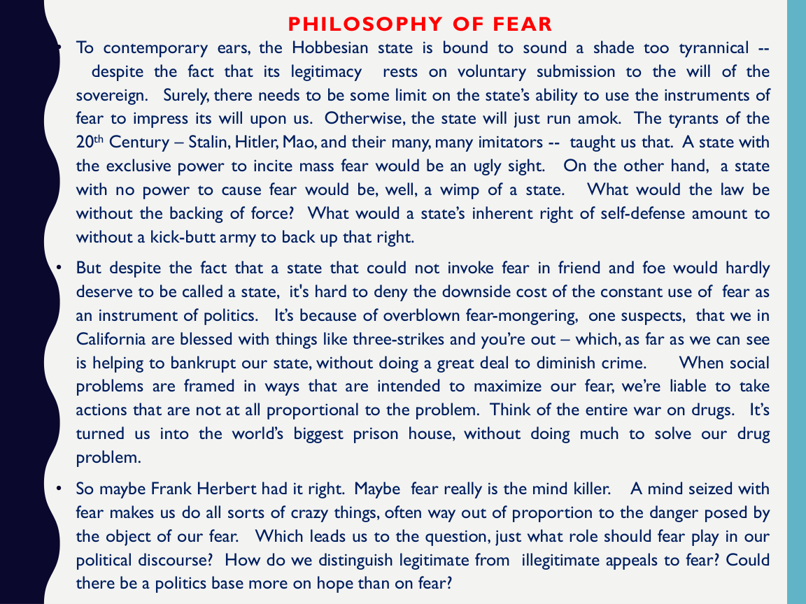
Lecture source: MDE172_Lecture14_April26 / page 5
Extracted snippet: PHILOSOPHY OF FEAR • To contemporary ears, the Hobbesian state is bound to sound a shade too tyrannical -- despite the fact that its legitimacy rests on voluntary submission to the will of the sovereign. Surely,there needs to be some limit on the state’s ability to use the instruments of fear to impress its will upon us. Otherwise, the s...
What is suit to the statement sounds like “It is okay to live a life others do not understand” in Philosophy of Life among points offered below?
Answer: Authenticity and living one's own life independently of others' judgment.
Lecture source: MDE172_Lecture9_April26 (2) / page 3
Extracted snippet: Philosophy of West in XIX century. The XIX century philosophy (additional topic of lecture 8 ) • The founders of the "philosophy of life" or "philosophy of will (voluntarism)“. A good representative of the philosophy of life, as well as irrational philosophy is Arthur Schopenhauer, the author of the book "The World as Will and Idea“. If ...
What doctrine shows that t he essence of its philosophy is the principle which was based on the belief to the infinite possibilities of man and his capacity to improve states that man has the crown of nature, he is in the center of the universe?
Answer: Humanism.
Lecture source: MDE172_Lecture5_April26 / page 11
Extracted snippet: HUMANISM AND HELIOCENTRISM • The essence of the philosophy of Humanism - the principle was based on the belief to the infinite possibilities of man and his capacity to improve states that man has the crown of nature, he is in the center of the universe. • The essence of the concept of heliocentrism - was proposed by Nicolaus Copernicus (...
What group is presenting Dante A lighieri with his work so -called “Divine Comedy” among outstanding humanists of the Renaissance time?
Answer: Proto-humanism or the early humanists of the Renaissance.
Lecture source: MDE172_Lecture5_April26 / page 8
Extracted snippet: I. Features of the philosophy of the Renaissance period II. Outstanding humanists of the Renaissance III. Natural philosophy of the Renaissance IV. The social philosophy of the Renaissance Syllabus T opic(Lecture 5) Additional Philosophy of Renaissance culture and Reformation
What is the central principle of modern philosophy or philosophy of new time?
Answer: Scientific centrism.
Lecture source: MDE172_Lecture6_April26 / page 10
Extracted snippet: Western European philosophy of “New time” or Modern Philosophy (additional of topic 6) I. The central principle of modern philosophy - scientific centrism II. Scientific contributions of Newton - formulation of the basic laws of mechanics, including the law of gravity III. Scientific contributions of Boyle - development of the concept of...
Who came up with the basic laws of mechanics in the modern period of philosophy?
Answer: Isaac Newton.
Lecture source: MDE172_Lecture7_April26 / page 29
Extracted snippet: Main Features Of Classical Theories K. Marx and M. Weber compared Broadly Marxist Ideas Broadly Weberian Ideas The main dynamic of modern development is the expansion of capitalistic economic mechanism. The main dynamic of modern development is the rationalization of production. Modern societies are riven with class inequalities, which a...
Who came up with the idea of a chemical element in modern times of philosophy?
Answer: Robert Boyle.
Lecture source: MDE172_Lecture7_April26 / page 29
Extracted snippet: Main Features Of Classical Theories K. Marx and M. Weber compared Broadly Marxist Ideas Broadly Weberian Ideas The main dynamic of modern development is the expansion of capitalistic economic mechanism. The main dynamic of modern development is the rationalization of production. Modern societies are riven with class inequalities, which a...
Who discovered the human circulatory system during the modern times of philosophy?
Answer: William Harvey.
Lecture source: MDE172_Lecture7_April26 / page 29
Extracted snippet: Main Features Of Classical Theories K. Marx and M. Weber compared Broadly Marxist Ideas Broadly Weberian Ideas The main dynamic of modern development is the expansion of capitalistic economic mechanism. The main dynamic of modern development is the rationalization of production. Modern societies are riven with class inequalities, which a...
Which philosopher of the modern philosophy promoted empirical scientific methods such as induction and famously declared that “Knowledge is power”?
Answer: Francis Bacon.
Lecture source: MDE172_Lecture7_April26 / page 29
Extracted snippet: Main Features Of Classical Theories K. Marx and M. Weber compared Broadly Marxist Ideas Broadly Weberian Ideas The main dynamic of modern development is the expansion of capitalistic economic mechanism. The main dynamic of modern development is the rationalization of production. Modern societies are riven with class inequalities, which a...
Who promoted the rational method in science, particularly deduction, and authored the book “Discourse on Method” during the modern period of philosophy?
Answer: Rene Descartes.
Lecture source: MDE172_Lecture6_April26 / page 11
Extracted snippet: OUTSTANDING PHILOSOPHERS OF MODERN TIME I. The founder of British empiricism and incomplete induction method - Francis Bacon II. Author of theory of the social contract and the book "Leviathan" - Thomas Hobbes III. The founder of English sensationalism and the concept of separation of powers - John Locke (principle of nose-fist) IV. The ...
What are the three branches into which philosophy is divided, according to the views of Thomas Hobbes?
Answer: Nature of matter, human psychology, and politics.
Lecture source: MDE172_Lecture6_April26 / page 15
Extracted snippet: THOMAS HOBBE’S STATEMENTS ➢ The book of “Leviathan” which argue that preservation of peace requires an absolute sovereign ➢ Hobbes’ main philosophical aim is to show how politics should be regarded as a science similar to mechanics. Politics is the most useful science, because it can prevent war; peace requires a proper understanding of ...
What is the best method of learning according Francis Bacon’s thoughts?
Answer: Induction, moving from particular facts to general conclusions.
Lecture source: MDE172_Lecture6_April26 / page 14
Extracted snippet: FRANCIS BACON’S STATEMENTS ➢ Knowledge should be used to control nature for the benefit and liberation of humanity ➢ Knowledge should be classified ➢ Proposed observation as the best methods of learning ➢ Humanism is delicate style of learning that gives no serious business of science ➢ Eliminative induction (observations) ➢ Hypothesis s...
According to Thomas Hobbes, what are the two main components of psychological theory?
Answer: Sensation and motivation.
Lecture source: MDE172_Lecture6_April26 / page 16
Extracted snippet: THOMAS HOBBE’S STATEMENTS ➢ The universe consists only of matter in motion, and causal influence can be transmitted from one body to another only through motion. All causation is mechanistic. ➢ So, each materialistic things that exists is physical can be seen as a consequence of his mechanistic view in causation. Anything nonphysical wou...
Who believed that all our ideas come from experience and made this the main point of his theory?
Answer: John Locke.
Lecture source: MDE172_Lecture6_April26 / page 17
Extracted snippet: JOHN LOCKE’S STATEMENTS ➢ The center of his theory is that all ideas are derived from experience. ➢ His theory of knowledge aims to avoid the extremes of groundless speculation and universal skepticism, to clarify the prospects of the new sciences, and to show how moral knowledge is possible. ➢ All ideas come from sensation and reflectio...
What corresponds to the central principle of Enlightenment philosophy?
Answer: To enlighten: to share knowledge and promote literacy.
Lecture source: MDE172_Lecture6_April26 / page 27
Extracted snippet: CENTRAL PRINCIPLE OF ENLIGHTENMENT PHILOSOPHY I. The central principle of Enlightenment philosophy – TO ENLIGHTEN – TO SHARE KOWLEDGE TO PROMOTE LITERACY
Which Enlightenment thinker believed that the human mind becomes more intell igent through activity and travel, expressing the idea that thinking is perfected by exposure to a wider range of experiences and contacts with the world?
Answer: Baruch de Spinoza.
Lecture source: MDE172_Lecture6_April26 / page 29
Extracted snippet: SPINOZA IDEAS OF MODERN AND ENLIGHTENMENT TIME Spinoza: ▪ Three infinite substance (God, perfect (ideals) and material things) were combined into one. ▪ His main thought is: “Human mind is more intelligent as more he active and travel. Or Thinking of human is more perfect and it is depend on a wider range of things that a person comes in...
Which option does not represent a natural right?
Answer: Anything that is not liberty, property, security, or equality is not a natural right.
The exact choice cannot be recovered because the options are not present in the questions PDF.
Lecture source: MDE172_Lecture2_April26 / page 19
Extracted snippet: FIVE COMMANDMENTS OF BUDDHISM •1. I accept the right of scientists to abstain from killing living beings. Do not kill 2. I accept the right of scientists to abstain from taking what is not given to me. Do not steal 3. I accept the right of scientists to refrain from adultery Do not commit adultery 4. I accept the right of scientists to r...
What are the three branches of government po wer that were identified and separated by the French lawyer Charles-Louis de Montesquieu?
Answer: Legislative, executive, and judicial.
Lecture source: MDE172_Lecture6_April26 / page 37
Extracted snippet: OUTSTANDING PHILOSOPHERS OF ENLIGHTENMENT TIME Charles-Louis de Montesquieu was a French lawyer, man of letters, and political philosopher who lived during the Age of Enlightenment. He is famous for his articulation of the theory of separation of powers, which is implemented in many constitutions throughout the world. He did more than an...
What does not fit with the main principles of humanism?
Answer: Theocentrism does not fit the main principles of humanism.
This is inferred from the lecture's contrast between humanism and theocentrism.
Lecture source: MDE172_Lecture5_April26 / page 11
Extracted snippet: HUMANISM AND HELIOCENTRISM • The essence of the philosophy of Humanism - the principle was based on the belief to the infinite possibilities of man and his capacity to improve states that man has the crown of nature, he is in the center of the universe. • The essence of the concept of heliocentrism - was proposed by Nicolaus Copernicus (...
What are the historical origins of humanism in terms of time and location?
Answer: Renaissance Italy, mainly the 14th-16th centuries.
Lecture source: MDE172_Lecture10_April26 / page 7
Extracted snippet: HISTORICAL BACKGROUND OF PHILOSOPHY OF L ANGUAGE • Medieval theories: Signification and mental language The medieval thinkers disagreed as to whether words signify things directly or only through concepts. The latter view ran the danger of making concepts a screen between language and reality, but it had the advantage of being able to ex...
How is a complex society defined when it is characterized by the development of the state, social stratification, urbanization, and symbolic systems of communication beyond spoken or signed language?
Answer: Civilization.
Lecture source: MDE172_Lecture7_April26 / page 5
Extracted snippet: Philosophy of human, humanity, civilization. Humanism. A Civilization (also spelled civilisation in British English) is any complex society characterized by the development of the state, social stratification, urbanization, and symbolic systems of communication beyond signed or spoken languages (namely, writing systems)
Which of the given terms does not relate to the concept of the 'thing-in-itself'?
Answer: Phenomenon or appearance.
Kant contrasts the thing-in-itself with phenomena.
Lecture source: MDE172_Lecture10_April26 / page 7
Extracted snippet: HISTORICAL BACKGROUND OF PHILOSOPHY OF L ANGUAGE • Medieval theories: Signification and mental language The medieval thinkers disagreed as to whether words signify things directly or only through concepts. The latter view ran the danger of making concepts a screen between language and reality, but it had the advantage of being able to ex...
Who proposed the concept of the 'thing-in-itself'?
Answer: Immanuel Kant.
Lecture source: MDE172_Lecture7_April26 / page 7
Extracted snippet: THING -IN-ITSELF German philosophy XVIII – XIX centuries. Marxism philosophy within the context of Soviet culture. (additional topic, lecture 7) • First law of German philosophy is Thing-in-itself . In the Kantian philosophy, the thing-in-itself (German: Ding an sich) is the status of objects as they are, independent of representation an...
In Lecture 7, you saw an image titled 'Eyes Glance or View,' where we discussed the concepts of subject, being, and object. Which of these three terms is most closely related to the internal understanding or perception of the 'thing-in-itself'?
Answer: Subject.
Lecture source: MDE172_Lecture1_April26 / page 18
Extracted snippet: SUBJECT AND OBJECT OF COGNITION • Subject of cognition (Under the subject of cognition should be understood endowed with human consciousness included in the system of social and cultural ties, whose activity is aimed at understanding the mysteries of the opposing object). • Object of cognition (Philosophical category denoting a thing, a ...
As we know, Immanuel Kant believed in certain fundamental assumptions and argued that no event occurs without something specific. According to him, what must every event have?
Answer: A cause.
Lecture source: MDE172_Lecture7_April26 / page 17
Extracted snippet: PHILOSOPHY OF IMMANUEL KANT I. Kant explained the role of cognition through cognitive problem. Kant reject both the Rationalist and Empiricist traditions because they share certain fundamental assumption. First, they assume that there is only one source of knowledge: either sense experience or reason. In contrast, Kant argues that sensat...
According to Imma nuel Kant's philosophy, which question is central to the issue of morality?
Answer: 'What should I do?'
Lecture source: MDE172_Lecture7_April26 / page 18
Extracted snippet: KANT’S QUESTIONS What do I know? (metaphysics) What should I do?(morality) What am I allowed to hope?(religion) What is a man? (anthropology)
According to Immanuel Kant's philosophy, which question is central to the issue of metaphysics or cognitive process?
Answer: 'What do I know?'
Lecture source: MDE172_Lecture1_April26 / page 26
Extracted snippet: NOTION OF COGNITION, ITS T YPES AND FUNCTION S IN PHILOSOPHY, ITS ROLE IN EPISTEMOLOGI CAL CONCEPT ▪ "Cognition" is a word that dates back to the 15th century when it meant "thinking and awareness". Attention to the cognitive process came about more than twenty-three centuries ago, beginning with Aristotle and his interest in the inner w...
According to Immanuel Kant's philosophy, which question is central to the issue of religion?
Answer: 'What am I allowed to hope?'
Lecture source: MDE172_Lecture12_April26 / page 14
Extracted snippet: PHILOSOPHY OF RELIGION ✓ Philosophy of religion is "the philosophical examination of the central themes and concepts involved in religious traditions". Philosophical discussions on such topics date from ancient times, and appear in the earliest known texts concerning philosophy. The field involves many other branches of philosophy, inclu...
According to Immanuel Kant's philosophy, which question is central to the issue of anthropology?
Answer: 'What is a man?'
Lecture source: MDE172_Lecture7_April26 / page 7
Extracted snippet: THING -IN-ITSELF German philosophy XVIII – XIX centuries. Marxism philosophy within the context of Soviet culture. (additional topic, lecture 7) • First law of German philosophy is Thing-in-itself . In the Kantian philosophy, the thing-in-itself (German: Ding an sich) is the status of objects as they are, independent of representation an...
Which logical principle in German philosophy states that a person should act in such a way that the maxim of their behavior could serve as a universal example?
Answer: The categorical imperative.
Lecture source: MDE172_Lecture7_April26 / page 22
Extracted snippet: PHILOSOPHY OF IMMANUEL KANT Kant wrote “General natural history and world view”. In this work he proposed: ➢ study of relative calm to movement ➢ emergence and destruction of matter (existence) ➢ pure reason – study of cognition that world exist independently from human consciousness, by this has developed a doctrine of "things in itself...
In which genres did Korkyt-ata contribute to literature and art?
Answer: Epic, storytelling, and musical art through kobyz melodies.
Lecture source: MDE172_Lecture13_April26 / page 6
Extracted snippet: PHILOSOPHY OF CULTURE AND ART ✓The view that “art is imitation (representation)” has not only been challenged, it has been moribund in at least some of the arts since the 19th century. It was subsequently replaced by the theory that art is expression. Instead of reflecting states of the external world, art is held to reflect the inner st...
What fear or challenge did Korkyt -ata struggle with throughout his life, leading him to stand against it?
Answer: The fear of inevitable death.
Lecture source: MDE172_Lecture8_April26 / page 4
Extracted snippet: PHILOSOPHICAL VIEWS OF KORKYT ATA • Legend has it that Korkyt could not come to terms with the transience of human life from a young age, so he decided to fight against the inevitable death. T ormented by his thoughts and driven by the dream of immortality, Korkyt leaves people, but everywhere and everywhere he sees death: in the forest,...
Who authored Kutadgu Bilig, the first encyclopedic work in the Turks language?
Answer: Yusuf Balasaguni.
Lecture source: MDE172_Lecture8_April26 / page 5
Extracted snippet: PHILOSOPHICAL VIEWS OF YUSUF BAL ASAGUNI • Y usuf Balasaguni came from a certain cultural area and political region, encompassing at one time Otrar (Farab), Shash (Tashkent), Taraz, Chui V alley, Issyk-Kul region, Ferghana, Kashgari. Culturally and linguistically, he is the common ancestor of the Turkic-speaking peoples, geographically h...
Why did people refer to Asan-Kaigy as "Sad Asan"?
Answer: Because of his constant reflection and sorrowful concern for the future of the people.
Lecture source: MDE172_Lecture8_April26 / page 7
Extracted snippet: PHILOSOPHICAL VIEWS OF THE ASAN KAIGY The Asan Kaigy (in con. 14th century — 60s of the 15th century.) — poet, philosopher , legendary character. He is nicknamed "Sad Asan" ("kaigy") because of his constant reflection. He was an influential bey of Ulugh-Muhammad, in Sarai and Kazan. Asan Kaigy is the author of many edifying words and phi...
What words did Asan Kaigy address to Zhanibek Khan?
Answer: 'Without thinking about the future of the Kazakh people, you rejoice at temporary successes.'
Lecture source: MDE172_Lecture8_April26 / page 7
Extracted snippet: PHILOSOPHICAL VIEWS OF THE ASAN KAIGY The Asan Kaigy (in con. 14th century — 60s of the 15th century.) — poet, philosopher , legendary character. He is nicknamed "Sad Asan" ("kaigy") because of his constant reflection. He was an influential bey of Ulugh-Muhammad, in Sarai and Kazan. Asan Kaigy is the author of many edifying words and phi...
Who described the promised land of Zheruyuk as a place with abundant pastures, flowing rivers, a mild climate, rich wildlife, and a life free from grief, need, hostility, and oppression?
Answer: Asan Kaigy.
Lecture source: MDE172_Lecture8_April26 / page 7
Extracted snippet: PHILOSOPHICAL VIEWS OF THE ASAN KAIGY The Asan Kaigy (in con. 14th century — 60s of the 15th century.) — poet, philosopher , legendary character. He is nicknamed "Sad Asan" ("kaigy") because of his constant reflection. He was an influential bey of Ulugh-Muhammad, in Sarai and Kazan. Asan Kaigy is the author of many edifying words and phi...
Which poet served as the chief advisor to the legendary Kazakh Khan Abylay?
Answer: Bukhar Zhyrau.
Lecture source: MDE172_Lecture8_April26 / page 8
Extracted snippet: SOCIO -POLITICAL AND PHILOSOPHICAL VIEWS OF THE AKYNS -ZHYR AU OF THE XVII -XVIII CENTURIES . ( BUKHAR ZHYRAU , DUL AT AKYN , M.UTEMIS OV , ETC.) Bukhar zhyrau Kalkamanuly is a prominent representative of Kazakh oral poetry. Chief advisor to the legendary Kazakh Khan Abylay. Bukhar zhyrau is best known as a singer and advisor to the khan...
Which poet consistently called for unity and the formation of a strong, un ited Kazakh Khanate?
Answer: Bukhar Zhyrau.
Lecture source: MDE172_Lecture8_April26 / page 8
Extracted snippet: SOCIO -POLITICAL AND PHILOSOPHICAL VIEWS OF THE AKYNS -ZHYR AU OF THE XVII -XVIII CENTURIES . ( BUKHAR ZHYRAU , DUL AT AKYN , M.UTEMIS OV , ETC.) Bukhar zhyrau Kalkamanuly is a prominent representative of Kazakh oral poetry. Chief advisor to the legendary Kazakh Khan Abylay. Bukhar zhyrau is best known as a singer and advisor to the khan...
Who among Kazakh poets is regarded as the founder of the satirical genre?
Answer: Dulat Babatayuly.
Lecture source: MDE172_Lecture8_April26 / page 9
Extracted snippet: SOCIO -POLITICAL AND PHILOSOPHICAL VIEWS OF THE AKYNS -ZHYR AU OF THE XVII -XVIII CENTURIES . ( BUKHAR ZHYRAU , DUL AT AKYN , M.UTEMIS OV , ETC.) Dulat Babatayuly (1802, Ayaguz village, Semipalatinsk region, Omsk province (now Ayaguz district, East Kazakhstan region) — 1874, ibid.) — Russian-Kazakh poet. There is practically no informati...
Which of the mentioned words does not align with the core principles of the "Rukhani Zhangyru" state program?
Answer: Revolutionary development does not align with the core principles of Rukhani Zhangyru.
Lecture source: MDE172_Lecture8_April26 / page 17
Extracted snippet: SIGNIFICANCE OF THE SPIRITUAL HERITAGE OF OUTSTANDING FIGURES OF THE KAZAKH PEOPLE IN THE LATE 19TH AND EARLY 20TH CENTURIES FOR THE FORMATION AND DEVELOPMENT OF A SOVEREIGN AND INDEPENDENT KAZAKHSTAN. "RUKHANI ZHANGYRU " PROGRAM. ✓ The program “Rouhani Zhangyru” was developed on the basis of the provisions of the Head of State’s article...
What are the six core principles of the "Rukhani Zhangyru" state program?
Answer: Competitiveness, pragmatism, preservation of national identity, cult of knowledge, evolutionary development, and openness of consciousness.
Lecture source: MDE172_Lecture8_April26 / page 17
Extracted snippet: SIGNIFICANCE OF THE SPIRITUAL HERITAGE OF OUTSTANDING FIGURES OF THE KAZAKH PEOPLE IN THE LATE 19TH AND EARLY 20TH CENTURIES FOR THE FORMATION AND DEVELOPMENT OF A SOVEREIGN AND INDEPENDENT KAZAKHSTAN. "RUKHANI ZHANGYRU " PROGRAM. ✓ The program “Rouhani Zhangyru” was developed on the basis of the provisions of the Head of State’s article...
Which Kazakh poet advanced the traditions of heroic singers, reshaped poetic imagery, and reinforced social themes, contributing to the rise of civic lyrics in Kazakh poetry?
Answer: Makhambet Utemisov.
Lecture source: MDE172_Lecture8_April26 / page 10
Extracted snippet: SOCIO -POLITIC AL AND PHILOSOPHICAL VIEWS OF THE AKYNS -ZHYR AU OF THE XVII -XVIII CENTURIES . ( BUKHAR ZHYRAU , DUL AT AKYN , M.UTEMIS OV , ETC.) Makhambet Utemisov (kaz. Makhambet Otemisuly; 1803, Bukeevskaya Horde, Russian Empire — October 20, 1846) — one of the leaders of the Kazakh uprising in Western Kazakhstan in 1836-1837. Poet (...
Who among Kazakh writers acquired proficiency in Arabic, Persian, Turkish, and Russian on his own?
Answer: Shakarim Kudaiberdiev.
Lecture source: MDE172_Lecture8_April26 / page 14
Extracted snippet: PHILOSOPHICAL AND IDEOLOGICAL -POLITICAL VIEWS, CREATIVE AND SOCIAL ACTIVITIES OF SH. KUDAIBERDIYEV , S. TORAIGYROV , M. DULATOV , A. BAITURSYNOV , M.ZH . KOPEEV , M.S. KASHIMOV . CONTINUATION AND DEVELOPMENT OF THE IDEAS OF ENLIGHTENMENT AND NATIONAL SELF -DETERMINATION. Shakarim Kudaiberdiev (1858-1931)- Kazakh poet, writer, translator...
What literary form or genre did Akhmet Baitursynov bring into Kazakh literature?
Answer: The fable genre.
Lecture source: MDE172_Lecture8_April26 / page 16
Extracted snippet: PHILOSOPHICAL AND IDEOLOGICAL -POLITICAL VIEWS, CREATIVE AND SOCIAL ACTIVITIES OF SH. KUDAIBERDIYEV , S. TORAIGYROV , M. DULATOV , A. BAITURSYNOV , M.ZH . KOPEEV , M.S. KASHIMOV . CONTINUATION AND DEVELOPMENT OF THE IDEAS OF ENLIGHTENMENT AND NATIONAL SELF -DETERMINATION. Akhmet Baitursynuly made a great contribution to the development o...
Who said following statement “Science is organized knowledge, while the wisdom is organized life”?
Answer: Immanuel Kant.
Lecture source: MDE172_Lecture1_April26 / page 5
Extracted snippet: DETERMINATION TROUGH QUOTES AND QUESTIONS ✓“Philosophy begins in wonder. And, at the end, when philosophic thought has done its best, the wonder remains. ”(Alfred North Whitehead) ✓“Science is organized knowledge. Wisdom is organized life. ” (Immanuel Kant, Critique of Pure Reason) ✓“Science is the great antidote/противоядие to the poiso...
Who said following statement “Wonder is the seed of knowledge”?
Answer: Francis Bacon.
Lecture source: MDE172_Lecture6_April26 / page 18
Extracted snippet: JOHN LOCKE’S STATEMENTS ➢ Categories of idea: idea of modes, idea of substances, idea of relations. ➢ Three different degrees of knowledge: intuitive knowledge is an immediate perception, demonstrative knowledge requires intervening steps, as in a mathematical and logical proof. Sensitive knowledge of particular external objects through ...
Who said following statement “The aim of science is not to open the door to infinite wisdom, but to set a limit to infinite error”?
Answer: Bertolt Brecht.
Lecture source: MDE172_Lecture1_April26 / page 5
Extracted snippet: DETERMINATION TROUGH QUOTES AND QUESTIONS ✓“Philosophy begins in wonder. And, at the end, when philosophic thought has done its best, the wonder remains. ”(Alfred North Whitehead) ✓“Science is organized knowledge. Wisdom is organized life. ” (Immanuel Kant, Critique of Pure Reason) ✓“Science is the great antidote/противоядие to the poiso...
What is studying the bases law of society, its development?
Answer: Social philosophy.
Lecture source: MDE172_Lecture1_April26 / page 9
Extracted snippet: PHILOSOPHY SECTION ✓ Ontology – study of existence, its principles , base and category ✓ Epistemology – study of cognition, cognitive problems , its opportunity, relation between knowledge and reality, achievement of truth, to reveal facts. ✓ Axiology – study of values, its social, political and moral context ✓ Social philosophy – study ...
What is studying of universe, world and nature?
Answer: Dialectology, in the lecture's terminology for the study of universe, world, and nature.
Lecture source: MDE172_Lecture1_April26 / page 9
Extracted snippet: PHILOSOPHY SECTION ✓ Ontology – study of existence, its principles , base and category ✓ Epistemology – study of cognition, cognitive problems , its opportunity, relation between knowledge and reality, achievement of truth, to reveal facts. ✓ Axiology – study of values, its social, political and moral context ✓ Social philosophy – study ...
What seeks to understand the relation between reality and cognition?
Answer: Category.
Lecture source: MDE172_Lecture1_April26 / page 12
Extracted snippet: MAIN CONCEPT OF PHILOSOPHY ✔ Category – look for relation between reality and cognition ✔ Law – has universe base related to everyone and everything ✔ Principle – first idea, central definition, base of each system ✔ Genesis – origin, condition and process of development of object or phenomenon ✔ Definition – a short explanation of resea...
What word refers to the universal base related to everyone and everything?
Answer: Law.
Lecture source: MDE172_Lecture1_April26 / page 12
Extracted snippet: MAIN CONCEPT OF PHILOSOPHY ✔ Category – look for relation between reality and cognition ✔ Law – has universe base related to everyone and everything ✔ Principle – first idea, central definition, base of each system ✔ Genesis – origin, condition and process of development of object or phenomenon ✔ Definition – a short explanation of resea...
What considers as a first idea, central definition, base of each system?
Answer: Principle.
Lecture source: MDE172_Lecture1_April26 / page 12
Extracted snippet: MAIN CONCEPT OF PHILOSOPHY ✔ Category – look for relation between reality and cognition ✔ Law – has universe base related to everyone and everything ✔ Principle – first idea, central definition, base of each system ✔ Genesis – origin, condition and process of development of object or phenomenon ✔ Definition – a short explanation of resea...
What considers as an origin, condition and process of development of object or phenomenon?
Answer: Genesis.
Lecture source: MDE172_Lecture1_April26 / page 12
Extracted snippet: MAIN CONCEPT OF PHILOSOPHY ✔ Category – look for relation between reality and cognition ✔ Law – has universe base related to everyone and everything ✔ Principle – first idea, central definition, base of each system ✔ Genesis – origin, condition and process of development of object or phenomenon ✔ Definition – a short explanation of resea...
What considers as a short explanation of researched object?
Answer: Definition.
Lecture source: MDE172_Lecture1_April26 / page 12
Extracted snippet: MAIN CONCEPT OF PHILOSOPHY ✔ Category – look for relation between reality and cognition ✔ Law – has universe base related to everyone and everything ✔ Principle – first idea, central definition, base of each system ✔ Genesis – origin, condition and process of development of object or phenomenon ✔ Definition – a short explanation of resea...
What historical period of the philosophy is founded on the principle of Cosmo-centrism?
Answer: Ancient philosophy.
Lecture source: MDE172_Lecture2_April26 / page 29
Extracted snippet: S OC R ATES , P L ATO, AR I S TOTLE Socrates, "I know that I know nothing. Know yourself". Compares method of philosophizing with art, arguing that helping to the birth of truth. Unfairly he was accused of blasphemy and sentenced to death, but bravely accepted death after drinking a cup of poison Plato, the ancient founder of idealism, a...
What historical period of the philosophy is founded on the principle of Theo-centrism?
Answer: Medieval philosophy.
Lecture source: MDE172_Lectures2_3_4_AdditionalTopics_April26 / page 30
Extracted snippet: THE BASIC PRINCIPLES OF THE MEDIEVAL PHILOSOPHY ▪ Feature of the European Medieval philosophy – is based on the connection of Christianity with ancient philosophy. ▪ The peculiarity of the Medieval Eastern philosophy – is based on the connection of Islam with Aristotelian science. ▪ The main ontological principle of Medieval Scholasticis...
What historical period of the philosophy is founded on the principle of Anthropocentrism or humanism?
Answer: Renaissance philosophy.
Lecture source: MDE172_Lecture5_April26 / page 11
Extracted snippet: HUMANISM AND HELIOCENTRISM • The essence of the philosophy of Humanism - the principle was based on the belief to the infinite possibilities of man and his capacity to improve states that man has the crown of nature, he is in the center of the universe. • The essence of the concept of heliocentrism - was proposed by Nicolaus Copernicus (...
What does the term Asceticism mean?
Answer: Asceticism means self-restraint, renunciation, and strict disciplined living.
Lecture source: MDE172_Lecture11_April26 / page 9
Extracted snippet: SCIENTISM • Scientism is the belief that science and the scientific method are the best or only way to render truth about the world and reality. • While the term was defined originally to mean "methods and attitudes typical of or attributed to natural scientists", some scholars, as well as political and religious leaders, have also adopt...
Which Chinese philosophical concept suggests that nature and human life flow along a certain path?
Answer: Taoism or Tao.
Lecture source: MDE172_Lecture2_April26 / page 24
Extracted snippet: FEATURES OF ANCIENT CHINESE PHILOSOPHY ✓T aoism- the life of nature and people flows along a certain path. T ao- own way, which is achievable only if the person purity of thought, humility and compassion, as well as non-interference, do not abuse the nature of things. ✓Confucianism - rights of every human life determines the heaven (Sky)...
Who said the famous quotes, 'I know that I know nothing. Know yourself'?
Answer: Socrates.
Lecture source: MDE172_Lecture2_April26 / page 29
Extracted snippet: S OC R ATES , P L ATO, AR I S TOTLE Socrates, "I know that I know nothing. Know yourself". Compares method of philosophizing with art, arguing that helping to the birth of truth. Unfairly he was accused of blasphemy and sentenced to death, but bravely accepted death after drinking a cup of poison Plato, the ancient founder of idealism, a...
Which ancient Greek philosopher proposed th e idea of idealism and founded the first Academy in Athens?
Answer: Plato.
Lecture source: MDE172_Lecture2_April26 / page 29
Extracted snippet: S OC R ATES , P L ATO, AR I S TOTLE Socrates, "I know that I know nothing. Know yourself". Compares method of philosophizing with art, arguing that helping to the birth of truth. Unfairly he was accused of blasphemy and sentenced to death, but bravely accepted death after drinking a cup of poison Plato, the ancient founder of idealism, a...
Which ancient Greek philosopher founded the first Lyceum?
Answer: Aristotle.
Lecture source: MDE172_Lecture2_April26 / page 29
Extracted snippet: S OC R ATES , P L ATO, AR I S TOTLE Socrates, "I know that I know nothing. Know yourself". Compares method of philosophizing with art, arguing that helping to the birth of truth. Unfairly he was accused of blasphemy and sentenced to death, but bravely accepted death after drinking a cup of poison Plato, the ancient founder of idealism, a...
How is the method of induction defined?
Answer: Induction is reasoning from the particular to the general.
Lecture source: MDE172_Lecture1_April26 / page 24
Extracted snippet: METHODS OF INDUCTION AND DEDUCTION RESULT, SOLUTION Task: I give you 100 keys to open only one door in H building of SDU, what will you do and How?? Induction is a method of reasoning from the particular to the general. Deduction is a method of reasoning from the general to the specific/particular (method of reasoning in which the tota...
How is the method of deduction defined?
Answer: Deduction is reasoning from the general to the particular.
Lecture source: MDE172_Lecture1_April26 / page 24
Extracted snippet: METHODS OF INDUCTION AND DEDUCTION RESULT, SOLUTION Task: I give you 100 keys to open only one door in H building of SDU, what will you do and How?? Induction is a method of reasoning from the particular to the general. Deduction is a method of reasoning from the general to the specific/particular (method of reasoning in which the tota...
Which author introduced the concept of the social contract in the book “Leviathan”?
Answer: Thomas Hobbes.
Lecture source: MDE172_Lecture6_April26 / page 11
Extracted snippet: OUTSTANDING PHILOSOPHERS OF MODERN TIME I. The founder of British empiricism and incomplete induction method - Francis Bacon II. Author of theory of the social contract and the book "Leviathan" - Thomas Hobbes III. The founder of English sensationalism and the concept of separation of powers - John Locke (principle of nose-fist) IV. The ...
Who is considered the founder of English sensationalism?
Answer: John Locke.
Lecture source: MDE172_Lecture6_April26 / page 11
Extracted snippet: OUTSTANDING PHILOSOPHERS OF MODERN TIME I. The founder of British empiricism and incomplete induction method - Francis Bacon II. Author of theory of the social contract and the book "Leviathan" - Thomas Hobbes III. The founder of English sensationalism and the concept of separation of powers - John Locke (principle of nose-fist) IV. The ...
If you're given 100 keys to open just one door, how would you use deductive method to find the correct key?
Answer: Use a deductive approach: first narrow the keys by general features of the lock and key, then test the key that matches those features.
Lecture source: MDE172_Lecture1_April26 / page 24
Extracted snippet: METHODS OF INDUCTION AND DEDUCTION RESULT, SOLUTION Task: I give you 100 keys to open only one door in H building of SDU, what will you do and How?? Induction is a method of reasoning from the particular to the general. Deduction is a method of reasoning from the general to the specific/particular (method of reasoning in which the tota...
If you're given 100 keys to open just one door, how would you use inductive method to find the correct key?
Answer: Use an inductive approach: try individual keys one by one and infer from repeated trials which key opens the door.
Lecture source: MDE172_Lecture1_April26 / page 24
Extracted snippet: METHODS OF INDUCTION AND DEDUCTION RESULT, SOLUTION Task: I give you 100 keys to open only one door in H building of SDU, what will you do and How?? Induction is a method of reasoning from the particular to the general. Deduction is a method of reasoning from the general to the specific/particular (method of reasoning in which the tota...
What number of fundamental substances of matter did Gottfried Leibniz introduce in his Monadology book?
Answer: An infinite number of monads.
Lecture source: MDE172_Lecture6_April26 / page 11
Extracted snippet: OUTSTANDING PHILOSOPHERS OF MODERN TIME I. The founder of British empiricism and incomplete induction method - Francis Bacon II. Author of theory of the social contract and the book "Leviathan" - Thomas Hobbes III. The founder of English sensationalism and the concept of separation of powers - John Locke (principle of nose-fist) IV. The ...
Who is known for the doctrine of substance monism and the book Ethics?
Answer: Benedict (Baruch) Spinoza.
Lecture source: MDE172_Lecture6_April26 / page 11
Extracted snippet: OUTSTANDING PHILOSOPHERS OF MODERN TIME I. The founder of British empiricism and incomplete induction method - Francis Bacon II. Author of theory of the social contract and the book "Leviathan" - Thomas Hobbes III. The founder of English sensationalism and the concept of separation of powers - John Locke (principle of nose-fist) IV. The ...
Which of these statements are in line with Francis Bacon’s philosophy?
Answer: Statements about induction, observation, and moving from particular facts to general conclusions fit Francis Bacon.
Lecture source: MDE172_Lecture6_April26 / page 14
Extracted snippet: FRANCIS BACON’S STATEMENTS ➢ Knowledge should be used to control nature for the benefit and liberation of humanity ➢ Knowledge should be classified ➢ Proposed observation as the best methods of learning ➢ Humanism is delicate style of learning that gives no serious business of science ➢ Eliminative induction (observations) ➢ Hypothesis s...
What did John Locke say about ideas?
Answer: All ideas come from experience, specifically from sensation and reflection.
Lecture source: MDE172_Lecture6_April26 / page 17
Extracted snippet: JOHN LOCKE’S STATEMENTS ➢ The center of his theory is that all ideas are derived from experience. ➢ His theory of knowledge aims to avoid the extremes of groundless speculation and universal skepticism, to clarify the prospects of the new sciences, and to show how moral knowledge is possible. ➢ All ideas come from sensation and reflectio...
What does the 'nose–fist' principle mean in the context of human rights and duties?
Answer: Your freedom ends where another person's freedom begins.
Lecture source: MDE172_Lecture6_April26 / page 18
Extracted snippet: JOHN LOCKE’S STATEMENTS ➢ Categories of idea: idea of modes, idea of substances, idea of relations. ➢ Three different degrees of knowledge: intuitive knowledge is an immediate perception, demonstrative knowledge requires intervening steps, as in a mathematical and logical proof. Sensitive knowledge of particular external objects through ...
According to René Descartes, how many fundamental substances exist?
Answer: Two fundamental substances.
Lecture source: MDE172_Lecture6_April26 / page 20
Extracted snippet: DOCTRINE OF SUBSTANCE I. According to Descartes there are two substances: spiritual - God and the created them - the material world II. According to Spinoza - there is a single substance - a fusion of God and nature III. According to Leibniz - there are many substances - monads
Which of these statements reflects the philosophy of George Berkeley?
Answer: Only minds or spirits and their ideas truly exist; matter as an independent substance is denied.
Lecture source: MDE172_Lecture6_April26 / page 21
Extracted snippet: GEORGE BERKELEY’S STATEMENTS ➢ Berkley views Locke’s philosophy as skeptical and atheistic; he overcomes these two faults, dramatically, by denying the existence of material substance. Minds and their ideas are all that exist. Our ideas of sense perception are not caused by material objects that lie behind a veil of perception, but direc...